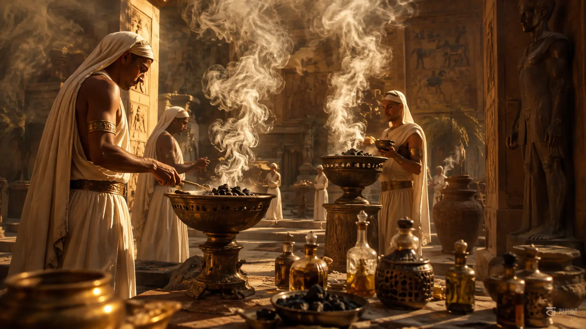
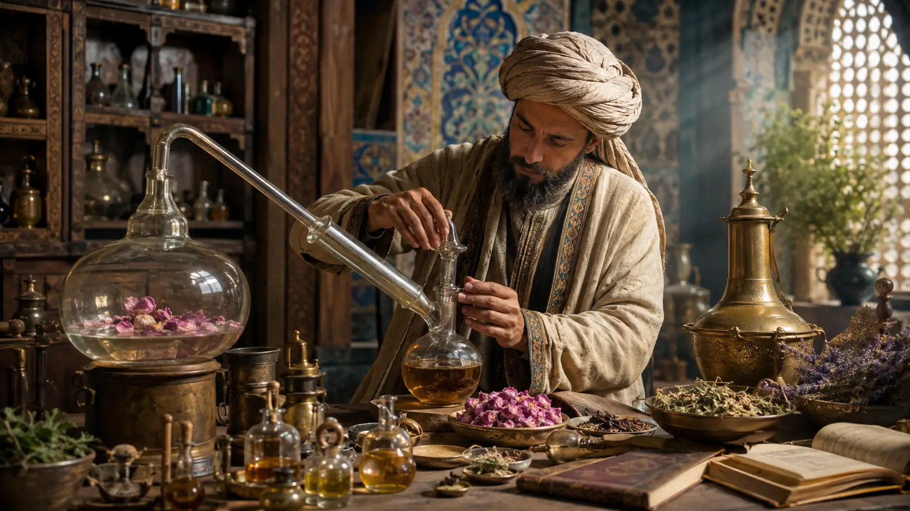
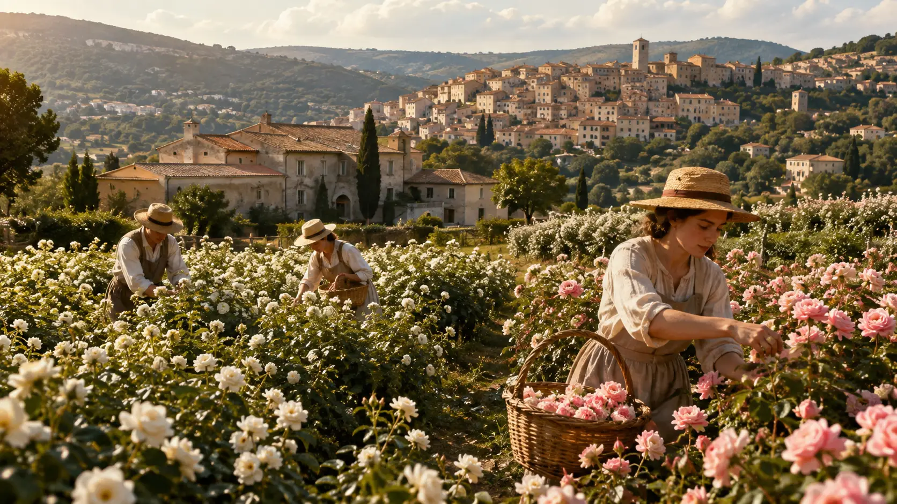
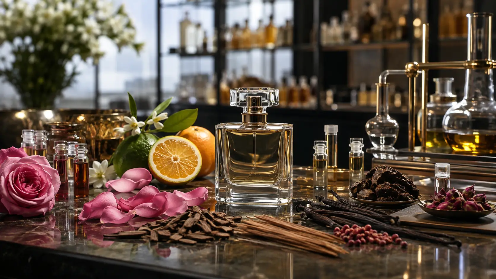
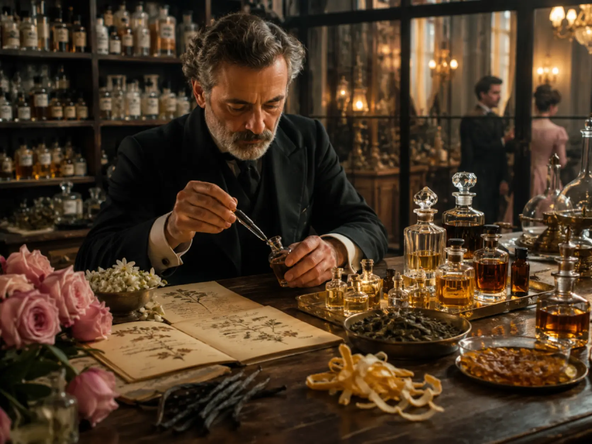

1. Before Perfume Was Perfume
Long before perfume became something sprayed from a glass bottle, fragrance was smoke, resin, oil and ritual.
Thousands of years before the existence of famous perfume houses, department-store counters or carefully designed bottles, people were already fascinated by the ability of certain plants and natural materials to transform the air around them. Aromatic woods, flowers, herbs, gums and resins could be burned, crushed, infused or mixed with oils, releasing scents that seemed almost mysterious compared with the ordinary smells of everyday life.
For early civilizations, however, fragrance was not primarily about smelling attractive. It was deeply connected to religion, medicine, ceremony, status and the supernatural.
Burning aromatic substances was especially important. When fragrant resins such as frankincense or myrrh were placed over fire, their scent rose into the air with the smoke. In many ancient societies, this upward movement gave fragrance a symbolic connection with the divine. Scent could accompany prayers, offerings and religious ceremonies, creating an atmosphere that separated sacred spaces from ordinary life.
This relationship between fragrance and smoke is even reflected in the word perfume itself. The modern term is traditionally associated with the Latin expression per fumum, meaning roughly “through smoke.” Although the sophisticated liquid perfumes of later centuries were still far in the future, the idea captures something fundamental about the earliest history of fragrance: some of humanity's first deliberate experiences with scent came from burning aromatic materials.
Natural fragrance was also valuable because many of its ingredients were difficult to obtain.
Resins, spices, flowers and scented woods often came from particular regions and had to travel through long-distance trade networks. Materials such as frankincense and myrrh, for example, became important commodities in the ancient world, moving across Arabia, northeastern Africa and the Mediterranean. Their rarity could make fragrance a sign of wealth as well as spirituality.
That connection between scent and social status would survive for thousands of years.
People also discovered that aromatic substances did not have to be burned. They could be combined with animal fats or vegetable oils, allowing their scent to remain on the skin for longer periods. Flowers and herbs could be soaked or pressed, while resins and spices could be incorporated into scented preparations used on the body, in religious ceremonies or even during funerary practices.
These early mixtures were very different from modern alcohol-based perfumes. There was no standardized industry, no familiar distinction between eau de toilette and eau de parfum, and certainly no concept of launching a new fragrance with a celebrity advertising campaign.
But the essential idea was already there: take an aromatic material, extract or preserve its scent, and use it deliberately.
Fragrance also became closely connected with cleanliness and personal presentation. In societies where bathing practices, climate and access to water varied enormously, scented oils could serve several purposes at once. They could soften the skin, mask unpleasant odors and signal refinement or wealth. A pleasant smell increasingly became something that could communicate information about the person wearing it.
That idea remains surprisingly familiar today.
Modern perfume advertising often presents fragrance as an expression of personality — elegant, rebellious, seductive, mysterious, powerful or sophisticated. Ancient societies obviously did not use modern marketing language, but scent was already capable of carrying social meaning. Who used a fragrance, what ingredients it contained and when it was worn could all matter.
Perfume therefore did not emerge from a single invention or one moment in history. It developed gradually from humanity's much older relationship with aromatic materials.
Fire revealed that plants and resins could perfume the air. Oils made fragrance wearable. Religious ceremonies gave scent symbolic power. Trade made rare ingredients valuable. And social customs slowly transformed fragrance from something offered to gods into something humans increasingly used on themselves.
From these beginnings, different civilizations would develop increasingly sophisticated techniques for producing and using scents.
Among them were the cultures of ancient Mesopotamia, where one remarkable figure would leave behind what is often regarded as the earliest surviving written record connected to a named perfume maker.
Her name was Tapputi.
And more than three thousand years ago, she was already experimenting with ingredients and techniques that make her story feel surprisingly close to the world of modern perfumery.
2. Tapputi and the First Known Perfumer
More than three thousand years ago, in ancient Mesopotamia, perfume making was already sophisticated enough to require specialized knowledge, carefully selected ingredients and repeated processing.
One of the most remarkable figures associated with this early world of fragrance is Tapputi-Belatekallim, a woman mentioned on a cuneiform tablet from the second millennium BCE. She is often described as the first named perfumer known to history, although the surviving evidence tells us far less about her life than we might wish.
What makes Tapputi important is not simply that her name survived.
It is that the text connected with her suggests a surprisingly advanced understanding of aromatic preparation.
Tapputi worked with ingredients such as flowers, oils, resins and other fragrant materials. Rather than merely burning them or mixing them together once, she appears to have used processes involving repeated heating, filtering and extraction. These techniques were designed to concentrate desirable aromas while removing unwanted material, turning raw natural ingredients into more refined scented preparations.
In other words, ancient perfumery was already becoming a craft.
Mesopotamia was an ideal environment for such development. The region was home to some of the earliest large urban civilizations, complex religious institutions and extensive trade networks. Temples and royal courts required oils, incense and aromatic substances for ceremonies, offerings, purification and personal use. Skilled specialists could therefore occupy important positions within palace or temple administration.
Tapputi's title, Belatekallim, is generally understood as indicating a high-ranking role within a household or palace environment. This makes her especially interesting because she was not simply an anonymous worker producing scented oils. She appears to have held a position of responsibility in an organized institution where fragrance could carry both practical and ceremonial importance.
The ingredients available to Mesopotamian perfume makers also reveal how interconnected the ancient world already was.
Aromatic woods, resins, spices and plants did not all grow locally. Some had to be transported over considerable distances. Trade connected Mesopotamia with regions across the Near East and beyond, allowing rare materials to reach cities where they could be transformed into incense, medicines, cosmetics and perfumes.
This meant that fragrance was tied not only to beauty and religion, but also to economics.
Rare ingredients required merchants, routes, storage and access to international trade. A particularly luxurious scented oil could therefore represent something much larger than a pleasant smell. It might contain materials that had crossed deserts, mountains or seas before reaching the hands of the person preparing it.
The methods described in ancient texts also show an important principle that remains central to perfumery today: raw materials rarely smell exactly the way a perfumer ultimately wants them to smell.
They must be processed.
Modern perfume houses use sophisticated extraction technologies, synthetic aroma molecules, precise measurements and laboratory equipment. Tapputi obviously had none of these tools, but the underlying challenge was similar. How do you capture an aroma? How do you make it stronger? How do you separate desirable scent from unwanted impurities? And how do you combine different materials into something balanced?
Those questions are at the heart of perfume making even now.
It is important, however, not to imagine Tapputi as a modern perfumer working with a recognizable bottle of alcohol-based fragrance. The scented products of her world were usually based on oils, fats, resins and aromatic waters. Their purposes also extended far beyond personal fragrance. They could be used in religious ceremonies, royal rituals, medicinal preparations and body care.
Even so, the principle of deliberate composition was becoming increasingly sophisticated.
Perfume was no longer simply the accidental smell produced when a fragrant plant was burned.
It was something that could be designed.
That distinction marks an important step in the history of fragrance. Once people began systematically selecting ingredients, extracting aromas and refining mixtures, perfumery started moving toward something recognizable as a specialized discipline.
And Tapputi provides us with an extraordinary human connection to that distant transformation.
Her surviving mention also challenges a common assumption about ancient technical professions. Women were not completely absent from early scientific and artisanal knowledge. In Tapputi's case, a woman appears directly within one of the earliest written traditions associated with chemistry-like perfume preparation.
Her story has therefore become symbolic far beyond the history of fragrance itself.
More than three millennia before modern perfumers began working for houses in Paris, Milan or New York, someone in ancient Mesopotamia was already experimenting with aromatic materials, processing them repeatedly and searching for better ways to capture scent.
But while Mesopotamia provides one of the earliest named figures in perfumery, another civilization would take fragrance to an extraordinary level of cultural importance.
In ancient Egypt, perfume would become inseparable from religion, beauty, death, status and the afterlife.
3. Ancient Egypt: Fragrance for Gods, Pharaohs and the Afterlife
Few civilizations embraced fragrance as deeply as ancient Egypt.
For the Egyptians, scent was not simply decorative. It was woven into religion, medicine, personal care, social status and funerary rituals. Aromatic oils and incense appeared in temples, palaces, homes and tombs, making fragrance part of both everyday life and the sacred world.
Religion was at the center of this relationship.
Egyptian temples regularly burned incense as an offering to the gods. Fragrant smoke helped create a sacred atmosphere and was believed to purify spaces while honoring divine beings. Certain aromatic substances became closely associated with ritual practice, and temple workers prepared complex mixtures specifically for ceremonial use.
One of the most famous of these preparations was kyphi.
Kyphi was not a single standardized recipe in the modern sense. Ancient sources describe mixtures containing combinations of ingredients such as resins, wine, honey, raisins, herbs and aromatic plants. Recipes varied over time and place, but kyphi became one of the best-known fragrances of ancient Egypt.
It was burned as incense, particularly in religious contexts, and later writers also associated it with medicinal or calming properties.
The complexity of preparations like kyphi reveals something important: Egyptian perfumery was not based on one dominant ingredient. It relied on layering different aromatic materials to create a more elaborate scent.
That concept would eventually become fundamental to perfume composition.
Fragrance was also deeply connected with the Egyptian understanding of the body.
Men and women used scented oils and ointments on their skin and hair. Egypt's hot and dry climate made oils useful for moisturizing the body, but fragrance transformed these practical preparations into something more luxurious. Pleasant scents could signal cleanliness, attractiveness and social refinement.
Wealthier Egyptians had access to more expensive aromatic ingredients, some of which had to be imported from distant regions.
Frankincense and myrrh were especially prized. These resins were obtained through long-distance trade networks connecting Egypt with areas of northeastern Africa and Arabia. Because they were valuable and difficult to acquire, they were used in high-status religious, medicinal and funerary contexts.
Control over aromatic materials could even become a matter of royal importance.
Egyptian rulers organized expeditions to obtain valuable goods from foreign lands, and one of the most famous examples appears during the reign of Hatshepsut in the fifteenth century BCE. Reliefs at her mortuary temple at Deir el-Bahari depict an expedition to the mysterious land known as Punt, from which the Egyptians acquired luxury goods including incense-producing trees and resins.
The images are striking because they show just how valuable fragrance materials could be.
Instead of simply importing finished resin, the Egyptians apparently attempted to bring living incense trees back with them. It was an ancient effort to secure direct access to one of the world's most desirable aromatic resources.
Perfume therefore belonged to international trade long before anything resembling the modern fragrance industry existed.
But perhaps nowhere was the importance of scent more visible than in Egyptian attitudes toward death.
Preserving the body was essential to Egyptian funerary beliefs, and aromatic substances played important roles in embalming and burial practices. Oils, resins and spices were used during the preparation of the dead, helping preserve the body while also giving the ritual a sacred sensory dimension.
The pleasant smell of certain substances could symbolize purity and divine protection, while decay and unpleasant odors represented precisely what the embalming process sought to overcome.
Fragrance therefore became connected with the possibility of eternal life.
Aromatic oils and perfumes were also placed inside tombs alongside other valuable objects. Archaeological discoveries have revealed containers that once held scented oils and cosmetic preparations, demonstrating that fragrance could be considered useful even beyond death.
Among the most famous examples comes from the tomb of Tutankhamun, discovered in 1922. Numerous vessels and containers associated with oils, ointments and cosmetics were found among the young pharaoh's burial goods. Some of these substances had survived in sealed containers for more than three thousand years, an extraordinary reminder of how seriously the Egyptians treated scented preparations.
Fragrance was not reserved exclusively for kings, however.
Images from Egyptian art show people wearing what are commonly described as scented cones on their heads during banquets and ceremonies. For many years, scholars debated whether these cones were symbolic artistic conventions or actual physical objects. Archaeological discoveries have since provided evidence that at least some real cone-like objects existed, although exactly how they were used and whether all artistic depictions represent perfumed cones remains debated.
Their repeated appearance nevertheless highlights the cultural association between fragrance, celebration and social life.
The Egyptian perfume tradition also demonstrates how closely ancient cosmetics, medicine and religion overlapped.
A scented oil might moisturize the skin, contain ingredients believed to have medicinal value, make its wearer smell pleasant and simultaneously carry religious significance. Modern consumers tend to separate perfume, skincare, medicine and worship into very different categories.
Ancient Egyptians did not necessarily draw those same boundaries.
This made fragrance extraordinarily versatile.
It could honor a god in the morning, perfume a person's body during the day and accompany someone into the afterlife after death.
Few societies before or since have integrated scent so completely into their worldview.
Egypt would therefore become one of the great foundations of perfume culture, developing complex aromatic preparations and helping establish fragrance as a symbol of luxury, purity and identity.
But the Egyptians were not the only Mediterranean civilization fascinated by scent.
As aromatic traditions spread and trade expanded, the Greeks and later the Romans would transform perfume into an even more visible part of personal luxury and everyday social life.

4. Greece and Rome Turn Fragrance into Luxury
By the time fragrance reached the Greek and Roman worlds, it was already ancient.
The civilizations of Mesopotamia and Egypt had spent centuries developing aromatic oils, incense and complex scented preparations. The Greeks inherited many of these traditions through trade, cultural exchange and conquest, but they gradually adapted them to their own ideas about medicine, beauty, athletics and social life.
In ancient Greece, fragrance became closely associated with the care of the body.
Scented oils were commonly applied after bathing and exercise, especially among those who could afford them. Athletes used oils on the skin, while physicians and writers discussed aromatic plants in connection with health and medicine. Perfume was therefore not viewed only as decoration. Like many other substances in the ancient world, it occupied a space where cosmetics, medicine and personal hygiene overlapped.
The Greeks also showed a growing interest in classifying and describing aromatic materials.
Writers such as Theophrastus, who lived in the fourth and third centuries BCE, discussed plants, flowers and the preparation of perfumes in works that provide valuable evidence about ancient scent production. His writings describe ingredients, methods and even observations about how different materials behaved when combined.
This is significant because it shows perfumery becoming something that could be studied systematically.
Producers learned that certain oils worked better as bases, that some ingredients retained their aroma longer than others and that the order in which materials were mixed could influence the final result. These may seem like simple observations today, but they reflect the gradual accumulation of practical knowledge that would eventually become essential to professional perfumery.
Fragrance was also connected with mythology.
According to Greek tradition, pleasant scents were associated with gods and divine beings, while flowers and aromatic plants frequently appeared in myths involving love, beauty and transformation. Aphrodite in particular became strongly linked with perfume, cosmetics and sensuality.
This strengthened an idea that would persist for centuries: fragrance could make the wearer more attractive, refined and desirable.
As Greek influence spread throughout the Mediterranean and Near East, perfume culture traveled with it. The conquests of Alexander the Great in the fourth century BCE dramatically expanded Greek contact with regions producing exotic spices, plants and aromatic materials.
Trade networks opened access to ingredients from Arabia, Persia, India and beyond.
Perfume was becoming increasingly international.
The Romans would take this enthusiasm to another level.
As Rome expanded across the Mediterranean, it absorbed Greek perfume traditions along with countless other cultural practices. Wealth from conquest and trade gave elite Romans access to extraordinary quantities of luxury goods, and fragrance became one of the clearest expressions of this new abundance.
Perfume could be used on the body, clothing and hair.
It could also appear in private homes, public baths, religious ceremonies and banquets. Wealthy Romans sometimes scented rooms, furniture and bedding, while aromatic oils became closely connected with bathing culture.
Roman baths were far more than places to wash.
They were major social institutions where people exercised, relaxed, conducted business and met friends. After bathing, scented oils could be applied to the skin, making perfume part of an entire ritual of cleanliness and presentation.
For the wealthy, however, fragrance could become extravagant.
Ancient writers occasionally complained about excessive perfume use, especially among Rome's elite. Such criticism reveals an important social tension. Perfume represented refinement and status, but too much of it could also be portrayed as evidence of decadence, vanity or moral decline.
That debate may sound surprisingly modern.
Luxury fragrances today still operate partly through exclusivity. Expensive ingredients, prestigious brands and elaborate bottles can communicate wealth and taste, while critics sometimes dismiss certain products as unnecessary extravagance.
The Romans were having similar arguments two thousand years ago.
The scale of Roman demand also encouraged a specialized perfume trade.
Perfume makers and sellers operated in major cities, offering scented oils and preparations made from flowers, herbs, spices, resins and imported materials. Rose, saffron, cinnamon, myrrh and other aromatics could appear in different combinations, while olive oil and other oils often served as carriers.
Because alcohol-based perfumery had not yet become dominant, these products would have felt very different on the skin from a modern spray fragrance.
But the commercial principle was increasingly familiar.
Customers could choose between different scents, qualities and prices. Rare ingredients made some products more prestigious than others. Certain fragrances became fashionable, while skilled makers could develop reputations for the quality of their preparations.
Fragrance was becoming a true luxury market.
Rome's enormous trade network helped support that market. Aromatic substances moved across routes connecting Europe, North Africa, Arabia and Asia. The desire for spices, incense and perfumes formed part of a much larger system of ancient luxury commerce.
Scent had become global long before globalization had a name.
Yet the fall of the Western Roman Empire did not end the story of perfumery. Knowledge, trade and aromatic traditions continued in different forms across the Mediterranean and Middle East.
And in the centuries that followed, some of the most important advances in the history of fragrance would emerge from the Islamic world, where scholars and artisans refined techniques that would transform the extraction and preparation of scent.
5. The Islamic Golden Age Transforms Perfumery
After the decline of the Western Roman Empire, the history of perfume did not simply disappear.
While political structures changed dramatically across Europe and the Mediterranean, knowledge of aromatic plants, medicine, chemistry and perfume making continued to develop elsewhere. Between roughly the eighth and thirteenth centuries, scholars and artisans working throughout the Islamic world made major contributions to medicine, pharmacy, chemistry and distillation — developments that would have enormous consequences for the future of fragrance.
The importance of perfume within Islamic societies helped create an environment in which aromatic materials remained highly valued.
Flowers, woods, spices, musk, ambergris and fragrant resins were used in personal grooming, homes, religious settings and medicine. Trade networks stretching from the Mediterranean and North Africa through Arabia, Persia, Central Asia and toward India and Southeast Asia provided access to an extraordinary range of aromatic ingredients.
Perfume was no longer dependent only on what could be grown nearby.
A merchant or perfumer operating in one of the great cities of the Islamic world might have access to materials that originated thousands of kilometers apart. Roses could be combined with spices from Asia, resins from Arabia or Africa and animal-derived materials such as musk.
This diversity of ingredients encouraged experimentation.
But the most important transformation was not simply the arrival of new smells.
It was the development of better ways to extract them.
Distillation itself was much older than the Islamic Golden Age, and versions of the technique had existed in antiquity. What scholars working in the medieval Islamic world accomplished was the refinement, documentation and increasingly sophisticated use of distillation equipment and procedures.
The basic principle was remarkably powerful.
A liquid containing aromatic material could be heated until volatile compounds evaporated. The resulting vapor could then travel through an apparatus where it cooled, condensed and returned to liquid form.
Instead of merely soaking flowers or spices in oil, perfume makers could increasingly separate and capture some of their volatile aromatic components.
This opened new possibilities for perfumery.
One of the most important scholars associated with this world was the ninth-century philosopher and polymath Al-Kindi.
Born in the early ninth century and active under the Abbasid Caliphate, Al-Kindi wrote on an extraordinary range of subjects, including mathematics, philosophy, medicine, music and natural science.
He also wrote about perfume.
A work attributed to him commonly known as the Book of the Chemistry of Perfume and Distillations contains numerous formulas and procedures connected with aromatic substances. It describes preparations involving fragrant oils, waters and other scented products while documenting techniques and equipment used in their production.
Its existence demonstrates how sophisticated perfume making had become.
Perfumery was no longer simply knowledge transmitted orally from one artisan to another. Recipes and procedures could be systematically recorded, studied and reproduced.
This was an important step toward the increasingly technical character of the craft.
Another influential figure was the Persian physician and scholar Al-Razi, known in Latin Europe as Rhazes, who lived during the ninth and early tenth centuries.
His writings discussed chemical operations and laboratory equipment, including apparatus related to distillation. Scholars such as Al-Razi belonged to a much broader intellectual tradition in which substances were heated, filtered, dissolved, crystallized and distilled in attempts to understand and manipulate the material world.
Perfume benefited directly from that experimentation.
Among the most important products associated with these techniques was rose water.
The rose had been valued for its fragrance long before this period, but improved distillation methods allowed aromatic waters to be produced efficiently and with greater refinement. Rose water became deeply embedded in the cultures of Persia and the wider Islamic world, appearing in cosmetics, medicine, food, religious contexts and personal fragrance.
Its influence remains visible today.
Rose continues to be one of the foundational materials of perfumery, appearing in everything from traditional Middle Eastern compositions to modern European designer fragrances.
The development of distillation also helped transform the relationship between perfumers and natural ingredients.
Earlier techniques often required flowers, herbs or resins to remain physically mixed with oils or fats while their aromatic properties were absorbed. Distillation offered another possibility: capture volatile aromatic compounds carried by vapor and separate them from much of the original plant material.
This did not instantly produce modern essential oils exactly as we understand them today, nor did medieval perfume suddenly become identical to a contemporary bottle of eau de parfum.
But it represented a major technological advance.
Perfume makers were learning increasingly sophisticated ways to isolate scent.
At the same time, the enormous geographical reach of Islamic trade brought perfumery into contact with some of the most extraordinary aromatic materials on Earth.
Musk, originally obtained from the musk deer, became one of the most prized perfume ingredients in history. Its powerful scent and ability to give depth and persistence to compositions made it extraordinarily valuable.
Ambergris, a rare substance produced in the digestive system of sperm whales and occasionally found floating at sea or washed onto coastlines, also became highly prized. After aging, its unusual aroma and fixative qualities made it valuable in luxury perfumery for centuries.
Oud, produced from resin-rich agarwood when certain trees respond to infection or injury, developed an especially important place in Middle Eastern fragrance culture. High-quality oud could become extraordinarily expensive, and it remains one of the defining materials of contemporary luxury perfumery in the region.
Alongside these came sandalwood, saffron, spices, aromatic herbs and countless floral materials.
Perfume was becoming an increasingly complex meeting point between science, trade and culture.
The cities of the Islamic world played an important role in that development.
Baghdad, Damascus, Cairo, Córdoba and other major centers connected merchants, physicians, pharmacists, scholars and craftspeople. Knowledge inherited from Greek, Roman, Persian, Indian and other traditions was translated, preserved, criticized and expanded.
This process would eventually have consequences far beyond the Islamic world itself.
From the eleventh and twelfth centuries onward, increasing intellectual and commercial contact between Islamic societies and Christian Europe helped transmit scientific and medical knowledge westward. Arabic works were translated into Latin, and European scholars encountered ideas, instruments and techniques that had been developed or refined over centuries.
Distillation was among them.
The consequences for perfume would eventually be profound.
Europe already knew scented oils, herbs and incense, but improved knowledge of distillation would contribute to entirely new forms of aromatic preparation. Eventually, one ingredient in particular would radically change what perfume could become:
alcohol.
Alcohol could act as an effective carrier for aromatic materials, evaporating from the skin while leaving fragrance behind. Once European perfumers learned how to work increasingly effectively with distilled alcohol, perfume could become lighter, more diffusive and fundamentally different from the heavy oil-based preparations that had dominated much of ancient history.
That transformation would not happen overnight.
But the technical foundations were falling into place.
The Islamic Golden Age therefore represents one of the most important bridges in the entire history of perfumery. Ancient traditions of aromatic oils and incense were preserved and expanded, new ingredients circulated through vast trade networks, and distillation became increasingly sophisticated and systematically documented.
Without those developments, the perfume industry that later emerged in Europe would have looked very different.
And as this knowledge traveled west, fragrance was about to enter another fascinating chapter — one involving medieval medicine, royal courts, changing attitudes toward cleanliness and an increasingly perfumed European aristocracy.
Perfume was returning to Europe, but this time it would return transformed.
6. How Perfume Returned to Medieval Europe
When people imagine medieval Europe, perfume is rarely the first thing that comes to mind.
Popular culture tends to portray the Middle Ages as an overwhelmingly dirty period in which people avoided bathing and simply covered unpleasant smells with powerful fragrances. The reality was considerably more complicated. Bathing customs changed across centuries and regions, public bathhouses existed in many European towns, and scented substances had purposes that went far beyond disguising body odor.
Fragrance had never completely disappeared from Europe after the fall of Rome.
Incense remained central to Christian religious ceremonies, while aromatic herbs, resins and oils continued to appear in medicine, cosmetics and domestic life. Monasteries preserved knowledge about plants and medicinal preparations, and gardens supplied herbs such as rosemary, lavender, sage and mint.
What changed gradually was Europe's access to a much wider aromatic world.
Trade across the Mediterranean brought European merchants into increasing contact with spices, resins and luxury materials originating in the Middle East and Asia. Venice, Genoa and other commercial centers became important gateways through which expensive goods such as cinnamon, cloves, nutmeg, musk and other aromatics reached wealthy European consumers.
The Crusades also intensified contact between Western Europeans and societies of the eastern Mediterranean, although perfume knowledge did not arrive through one single event. Commerce, translation, migration and centuries of interaction between Christian, Jewish and Muslim communities all contributed to the transmission of ingredients and techniques.
One of the most significant technological developments was the growing European mastery of distillation.
Knowledge preserved and expanded by scholars in the Islamic world entered Latin Europe through intellectual centers such as those in the Iberian Peninsula and southern Italy. European practitioners gradually became more familiar with distillation equipment and with the production of increasingly concentrated alcohol.
That would change perfume forever.
For most of antiquity, personal fragrances had generally relied on oils and fats to carry aromatic materials. Alcohol offered a very different medium. It evaporated quickly, helped disperse aromatic compounds into the air and produced fragrances that felt lighter than traditional scented oils.
The transition toward alcohol-based perfumery was gradual, but by the late Middle Ages new preparations were appearing that pointed directly toward the modern perfume bottle.
One of the most famous was Hungary Water.
Traditionally associated with the fourteenth century and a Hungarian queen, Hungary Water became one of Europe's celebrated early alcohol-based aromatic preparations. Its precise origins are uncertain, and later legends surrounding its creation are difficult to separate from historical fact, but versions commonly centered on rosemary combined with alcohol and sometimes other aromatic herbs.
What matters most is what it represented.
Instead of relying entirely on thick perfumed oils, Europeans increasingly had access to aromatic liquids carried in distilled alcohol.
This was a major step toward modern perfumery.
Fragrance during this period also remained closely connected with medicine.
Medieval and Renaissance Europeans inherited theories of health in which air, smell and bodily balance were believed to influence disease. Pleasant aromas were therefore sometimes considered protective, while foul smells could be interpreted as signs or causes of corruption.
These beliefs became particularly visible during epidemics.
When the Black Death devastated Europe in the fourteenth century, people had no understanding of bacteria or the role of fleas in transmitting plague. Under prevailing medical theories, corrupted or poisonous air — often described through the idea of miasma — could be blamed for illness.
Aromatic substances therefore seemed like a logical defense.
People might burn fragrant woods and herbs, carry flowers or scented materials, or use aromatic preparations in an attempt to purify the air around them. Such practices could not prevent plague, but they reinforced the cultural association between pleasant smells, cleanliness and health.
That association would survive for centuries.
Perfume was also becoming increasingly important among European elites.
Royal courts offered the ideal environment for expensive fragrances. Imported ingredients were costly, skilled preparation required expertise, and possessing rare scents demonstrated access to luxury trade networks.
As European aristocratic culture became increasingly elaborate, fragrance became another way to distinguish wealth and refinement.
Perfumed gloves provide a particularly interesting example.
Leather tanning could leave strong and unpleasant odors, so glove makers began scenting finished leather with aromatic materials. Over time, perfumed gloves became fashionable luxury objects, especially among the upper classes.
This apparently small trend would eventually play a major role in the history of one particular European town.
Grasse, in southern France, became known for leather glove production before developing an increasingly important connection with perfume. Local artisans began using fragrant materials to scent their goods, while the favorable climate of the surrounding region supported the cultivation of aromatic flowers.
The relationship between gloves and perfume would help set the stage for Grasse's later transformation into one of the world's most famous centers of fragrance.
But that development still lay ahead.
For now, perfume remained a luxury embedded in a much broader world of medicine, religion and social status.
Apothecaries were especially important.
The boundaries between pharmacist, herbalist, chemist and perfume maker were not yet clearly separated. A single shop might sell medicinal preparations, herbs, spices, aromatic waters and cosmetic products. Ingredients such as rose water or rosemary could serve different purposes depending on how they were prepared and used.
Once again, perfume existed at the intersection of several worlds.
It could be medicine.
It could be hygiene.
It could be religious.
And increasingly, it could simply be pleasure.
By the Renaissance, Europe's appetite for fragrance was accelerating. Expanding global trade made new aromatic materials available, distillation techniques improved, and royal courts competed in displays of fashion and luxury.
Italy became particularly influential.
Cities such as Venice and Florence were connected to powerful trading networks and sophisticated traditions of cosmetics and scented preparations. Italian courts helped establish new fashions that would spread across Europe.
Then, in the sixteenth century, those traditions would become closely connected with France.
According to one of the most enduring stories in perfume history, the marriage of Catherine de' Medici of Florence to the future French king Henry II in 1533 helped introduce Italian perfume fashions to the French court. The details surrounding her personal perfumer have accumulated considerable legend over the centuries, so the story should not be treated as the single moment when France discovered perfume.
France already knew fragrance.
What happened was something larger and more gradual.
Royal demand, luxury craftsmanship, international trade and access to extraordinary local flowers began converging in one country.
And in southern France, a town originally famous for leather was about to reinvent itself.
Its name was Grasse.
Over the following centuries, Grasse would become so closely associated with perfume that it would eventually be described as the perfume capital of the world.

7. Grasse Becomes the Capital of Perfume
Today, the name Grasse is almost inseparable from the history of perfume.
Located in the hills of southeastern France, not far from the Mediterranean coast, the town eventually became one of the most important centers of fragrance production in the world. But Grasse did not begin as a perfume city.
Its earlier reputation was built on leather.
During the Middle Ages and Renaissance, local tanners produced gloves, belts and other leather goods. The problem was that traditional tanning processes could leave leather with a strong and unpleasant smell. For wealthy customers increasingly interested in fashion, refinement and personal fragrance, this was not ideal.
Perfuming the leather offered a solution.
Glove makers began treating their products with aromatic substances to mask the odor and make them more desirable. Scented gloves became fashionable among European elites, especially in royal and aristocratic circles.
What began as a practical improvement gradually created an entirely new opportunity.
Artisans who worked with scented leather needed reliable access to flowers, herbs and aromatic ingredients. Grasse happened to be exceptionally well placed for that transition.
The surrounding region offered a favorable climate for cultivating fragrant plants.
Over time, fields of jasmine, roses, orange blossom, tuberose and other aromatic flowers became increasingly associated with the area. Local growers and processors developed specialized knowledge about when flowers should be harvested, how quickly they needed to be handled and how their delicate aromas could be preserved.
That knowledge became extraordinarily valuable.
Some flowers are surprisingly difficult to transform into perfume ingredients. Their scent can change quickly after harvesting, and heat can damage the very molecules responsible for their aroma. Before modern industrial extraction techniques existed, perfume makers needed methods capable of capturing these fragile scents with as little alteration as possible.
This challenge encouraged experimentation.
One technique that became especially associated with traditional French perfumery was enfleurage.
In cold enfleurage, fresh flowers were placed onto layers of purified fat. The fat gradually absorbed their aromatic compounds, and the exhausted flowers were replaced repeatedly with fresh ones until the fat became strongly scented.
The perfumed fat, known as a pomade, could then be washed with alcohol to separate and concentrate the aromatic material.
The process was slow, labor-intensive and expensive.
But for delicate flowers that did not tolerate heat well, it could capture fragrances that other methods struggled to preserve.
Another approach, known as maceration or hot enfleurage, used warmed fats to absorb aromatic substances more quickly. Steam distillation was also suitable for many plants, while later generations would introduce increasingly advanced extraction technologies.
Perfume making was becoming a combination of agriculture, chemistry and craftsmanship.
Grasse was uniquely positioned to bring all three together.
Farmers cultivated aromatic plants.
Specialists extracted their scents.
Perfumers learned how to combine those materials into increasingly sophisticated compositions.
And merchants connected the finished products with wealthy consumers far beyond southern France.
By the seventeenth and eighteenth centuries, the town's relationship with perfume had grown far beyond the original practice of scenting gloves. As leather production became less central, fragrance increasingly emerged as an industry in its own right.
Grasse developed a dense network of growers, distillers, processors and perfume houses.
The availability of local flowers was particularly important.
Jasmine, introduced to the region centuries ago and later cultivated extensively, became one of the great symbols of Grasse perfumery. Its intense floral scent is extraordinarily complex and has appeared in some of the most celebrated perfumes ever created.
Rosa centifolia, sometimes known as the May rose, also became closely associated with the region. Its soft, rich fragrance made it highly desirable for fine perfumery.
Orange blossom, violet, tuberose and lavender further expanded the aromatic palette.
The landscape itself became part of the perfume industry.
During harvest seasons, flowers often had to be picked by hand and processed rapidly. Jasmine, for example, is traditionally harvested early in the day, when its aromatic character is particularly valued. Large quantities of flowers may be required to produce relatively small amounts of concentrated fragrance material.
This helps explain why certain natural perfume ingredients have always been expensive.
A luxury fragrance may contain a material whose production began with thousands or even millions of individual blossoms.
Grasse also benefited from France's growing influence in European luxury culture.
During the reigns of kings such as Louis XIV and Louis XV, the French court became a powerful center of fashion, cosmetics and personal fragrance. Aristocrats used scented powders, gloves, clothing and perfumes, while elaborate standards of dress and grooming spread French tastes across Europe.
Versailles became especially famous for its fascination with scent.
The court of Louis XV in the eighteenth century was later nicknamed the “perfumed court,” reflecting the enormous popularity of fragrance among the aristocracy. Rooms, clothing, accessories and bodies could all be scented, and perfume became an essential part of elite presentation.
This demand strengthened French perfumery.
Grasse supplied materials and expertise to an expanding network of perfume makers, while Paris increasingly emerged as the commercial and cultural center where fragrances could be marketed to fashionable consumers.
This division would become extremely important.
Grasse produced many of the raw materials and technical expertise. Paris created brands, fashion and prestige.
Together, they helped establish France as the country most strongly associated with fine perfume.
By the nineteenth century, Grasse had become deeply integrated into the global fragrance trade.
Not every ingredient used by French perfumers came from France. Exotic woods, spices, resins, citrus oils and animal-derived materials arrived from around the world. Grasse became a place where these international materials could be processed, evaluated and combined with locally grown flowers.
Perfume had become a genuinely global product.
A single fragrance might contain citrus from Italy, vanilla from Madagascar, sandalwood from Asia, resins from the Middle East and flowers grown in Provence.
The perfumer's task was to turn all of those materials into something that smelled unified.
That required an increasingly sophisticated profession.
The people responsible for creating fragrances eventually became known in the industry as “noses” — specialists trained to recognize, remember and combine enormous numbers of aromatic materials.
Their work demanded both technical knowledge and creativity.
A perfumer had to understand how ingredients behaved, how long they lasted, how they interacted and how a fragrance changed over time on the skin.
The rise of Grasse therefore marked something larger than the growth of one town.
It represented the transformation of perfume into a highly specialized industry.
Agriculture supplied the flowers.
Extraction captured their scent.
Chemistry refined the materials.
Perfumers created compositions.
And luxury houses sold those invisible creations to consumers around the world.
Grasse remains an important center of perfumery today, even though the global fragrance industry now operates on a much larger scale and many natural ingredients are cultivated far beyond France.
Its symbolic importance, however, is difficult to overstate.
The town helped establish the model that would define modern fine fragrance: specialized raw materials, highly trained perfumers, technical innovation and a close relationship with luxury.
But another transformation was already underway.
Perfume was about to become lighter, fresher and easier to wear.
Instead of the dense oils and heavy aromatic preparations that had dominated much of history, European consumers were developing a taste for bright compositions built around citrus, herbs and alcohol.
At the center of that change was a new style of fragrance that would become famous across Europe.
It was called Eau de Cologne.
8. The Birth of Eau de Cologne
By the beginning of the eighteenth century, European perfumery was ready for a different kind of fragrance.
For centuries, perfumes had often been rich, dense and closely associated with oils, resins, spices and heavy floral materials. These compositions could be luxurious and long-lasting, but they were very different from the fresh, transparent fragrances that many people recognize today.
Then a new style emerged.
Light, citrusy, aromatic and carried in alcohol, it offered an entirely different sensation on the skin.
It became known as Eau de Cologne.
The story is most closely associated with Johann Maria Farina, an Italian-born perfumer who settled in Cologne, Germany, in the early eighteenth century. In 1709, Farina joined the family business that would become closely linked with the production of one of Europe's most famous scented waters.
Farina wanted to create something that reminded him of the freshness of an Italian morning.
In a letter traditionally associated with the fragrance, he described a scent evoking citrus blossoms, herbs and the landscape after rain. The exact formula remained a closely guarded secret, but the composition became famous for its bright use of citrus materials such as bergamot, lemon and orange combined with aromatic and floral elements.
The result smelled very different from many of the heavier perfumes popular at the time.
It was fresh.
Clean.
And unusually easy to wear.
That character came partly from the way Eau de Cologne was constructed.
Citrus oils contain highly volatile aromatic molecules. When applied to the skin, they evaporate quickly, producing an immediate burst of brightness. Combined with alcohol, they create a fragrance that feels airy and diffusive rather than thick or oily.
The effect could be dramatic.
Instead of remaining close to the skin like many traditional scented oils, Eau de Cologne seemed to explode into the air before gradually disappearing.
This fleeting quality would eventually become one of its defining characteristics.
Farina named his creation after the city where he lived.
In French, “Eau de Cologne” simply means “water of Cologne.”
French was widely used in European aristocratic and commercial circles, and the name helped give the product an international identity. Farina's fragrance soon attracted wealthy customers from across Europe, including members of royal and aristocratic families.
Its reputation spread rapidly.
At a time when many luxury goods were produced locally, the success of Eau de Cologne demonstrated that a fragrance could become famous far beyond the city in which it was created.
Perfume was beginning to function more like a recognizable branded product.
Farina's family business supplied clients across Europe, and the prestige of the original composition inspired countless imitators. The term “Eau de Cologne” gradually expanded beyond the Farina fragrance itself and became associated with an entire style of light, citrus-dominated perfumery.
This created a problem that would become very familiar in the modern fragrance industry.
Success attracted copies.
Many producers began selling their own versions of Cologne water, sometimes using names, packaging or claims designed to benefit from the reputation of the original. In an era before modern trademark law provided strong international protection, distinguishing authentic products from imitations could be difficult.
One of the most famous later names associated with Cologne was 4711.
Its origins date to the late eighteenth century, and the fragrance eventually became another internationally recognized example of the Eau de Cologne tradition. The number refers to the address assigned to the building where the product was associated with production during the French occupation of Cologne.
4711 would become so famous that for many consumers it came to represent Eau de Cologne almost as strongly as Farina's earlier creation.
But the two should not be confused.
Farina's fragrance preceded 4711 by decades, and the history of Cologne perfumery includes several competing families, producers and commercial traditions.
The popularity of Eau de Cologne also reflected changing attitudes toward fragrance.
Its freshness made it suitable for more frequent and liberal use. People could splash it onto the skin, clothing or handkerchiefs. It was sometimes added to bathwater and was also marketed historically for purposes that extended beyond what we would now consider ordinary perfume use.
Like many scented preparations of the period, Eau de Cologne existed in a world where the boundaries between cosmetics, medicine and personal hygiene remained blurred.
Some formulations were promoted as refreshing or beneficial to health, and aromatic waters could be used both externally and, historically, in ways that would seem unusual to modern consumers.
What mattered culturally was the association between citrus freshness and cleanliness.
Lemon, orange and bergamot gave the fragrance an energetic quality that contrasted with heavier animalic or resinous perfumes. Over time, these bright citrus notes became deeply connected with ideas of grooming, refreshment and personal hygiene.
That association has never disappeared.
Modern aftershaves, body splashes, summer fragrances and many men's grooming products still rely heavily on citrus and aromatic notes descended from the Cologne tradition.
Eau de Cologne also helped establish a concept that remains fundamental to the modern perfume industry: fragrances can differ not only in smell, but also in concentration and intended style of use.
A traditional Eau de Cologne generally contains a relatively low concentration of aromatic compounds compared with stronger modern perfume formats. It is designed to provide an immediate impression of freshness rather than remain intensely present for an entire day.
This distinction would later become part of a broader commercial vocabulary.
Terms such as Eau de Toilette, Eau de Parfum and Parfum would eventually help consumers understand, at least approximately, how concentrated and persistent a fragrance might be.
The exact percentages are not universally standardized, and different brands use the terms somewhat differently, but the basic hierarchy became familiar throughout the industry.
Eau de Cologne typically sat toward the lighter end of that spectrum.
Its influence also extended beyond Europe.
As European trade and colonial networks expanded, Cologne-style fragrances traveled internationally. Light citrus compositions became popular in many regions, and local variations eventually appeared around the world.
Some developed distinct cultural identities of their own.
In parts of Latin America, for example, inexpensive colognes became everyday grooming products used by generations of families. In Mediterranean countries, citrus waters remained associated with freshness and warm weather. In barbershops, aromatic colognes became part of familiar shaving rituals.
A perfume style created for elite European customers had gradually become something much broader.
Fragrance was becoming more accessible.
That did not mean luxury perfumery disappeared. Quite the opposite. Expensive perfumes continued to flourish, and rare natural ingredients remained symbols of prestige.
But Eau de Cologne demonstrated that fragrance could also be casual, refreshing and suitable for daily life.
It helped move perfume away from being exclusively associated with ceremonial luxury and aristocratic display.
This change would become increasingly important during the nineteenth century.
Industrialization was beginning to transform manufacturing.
Advances in chemistry were changing what perfumers could use.
New transportation networks were moving raw materials and finished products faster than ever before.
And a growing middle class wanted access to goods that had once belonged mainly to aristocrats.
Perfume was about to enter the modern industrial age.
But the most dramatic transformation would not come from another exotic flower or rare resin.
It would come from the laboratory.
During the nineteenth century, chemists learned how to create aromatic molecules that did not need to be extracted directly from nature.
For the first time, perfumers could begin working with scents that were cheaper, more consistent and sometimes completely impossible to obtain from natural materials alone.
Synthetic chemistry was about to change perfume forever.
9. Synthetic Molecules Change Perfume Forever
For most of perfume history, every fragrance depended on materials that could be obtained from the natural world.
Flowers had to be harvested. Resins had to be collected. Citrus peels had to be pressed. Woods had to be cut, spices transported and animal-derived materials sourced through complicated and often expensive trade networks.
Nature determined what perfumers could use.
During the nineteenth century, chemistry began to break that limitation.
Advances in organic chemistry allowed scientists to isolate the molecules responsible for particular smells and, increasingly, to reproduce or create aromatic substances in laboratories. This development transformed perfumery more profoundly than almost any previous innovation.
For the first time, a perfumer's palette no longer depended entirely on what could be grown, harvested or extracted.
It could be manufactured.
The change began gradually.
Chemists studying natural materials discovered that the characteristic scent of a flower, spice or resin was not produced by some mysterious property of the whole ingredient. Instead, aromas resulted from complex combinations of individual chemical compounds.
Once scientists began identifying those compounds, an obvious question followed.
Could they be made artificially?
In some cases, the answer was yes.
One of the most important early examples was coumarin.
Coumarin is a naturally occurring aromatic compound associated with the sweet, warm smell of freshly cut hay, tonka beans and certain plants. In the nineteenth century, chemists succeeded in synthesizing it, making it one of the earliest important synthetic aroma materials available to perfumers.
Its influence became enormous.
Coumarin provided a soft, sweet, slightly almond-like and hay-like character that could be reproduced consistently and used in compositions without relying entirely on natural sources.
Another breakthrough came with vanillin, the molecule primarily responsible for the recognizable aroma of vanilla.
Natural vanilla was expensive and labor-intensive to produce. Vanilla orchids required careful cultivation, and the harvested pods had to undergo a lengthy curing process before developing their familiar aroma.
Synthetic vanillin changed the economics completely.
Once chemists learned to manufacture it commercially, perfumers could obtain a powerful vanilla-like material at a fraction of the cost of natural vanilla.
More importantly, synthetic vanillin was not simply a cheap substitute.
It became a creative material in its own right.
Perfumers could use it at concentrations and in combinations that would have been difficult or prohibitively expensive with natural vanilla extract alone. Its warm sweetness became fundamental to countless fragrances and eventually to entire styles of modern perfumery.
Another crucial family of materials involved ionones.
These synthetic compounds, developed toward the end of the nineteenth century, produced floral and powdery aromas strongly reminiscent of violets.
This solved a long-standing problem.
Violets smell beautiful, but their characteristic fragrance is extremely difficult to capture efficiently through traditional extraction. The flowers do not yield a practical essential oil in the way that roses or lavender can.
Chemistry offered a solution.
Instead of extracting the flower itself, perfumers could recreate an impression of violet using molecules such as ionones.
This was revolutionary because it demonstrated that perfume no longer needed to contain a natural ingredient in order to evoke that ingredient convincingly.
A fragrance could create an illusion.
That idea became central to modern perfumery.
Synthetic chemistry also provided perfumers with materials whose smells had no exact equivalent in nature.
This was perhaps even more important.
A painter is not limited to colors found directly in landscapes, and a musician is not limited to sounds produced in nature. Once perfumers gained access to synthetic aroma molecules, they too could begin creating effects that had never existed in traditional natural perfumery.
The perfumer's palette expanded dramatically.
Naturals and synthetics could be combined, allowing a composition to become brighter, cleaner, stronger, more abstract or more stable than before.
Synthetic materials also helped solve practical problems.
Natural ingredients can vary enormously.
A rose harvested in one year may smell slightly different from a rose harvested the next. Climate, soil, rainfall, disease and harvesting conditions can all affect the final aroma.
Synthetic molecules are generally much more consistent.
A perfumer working with a specific aroma chemical can expect it to behave in roughly the same way from one production batch to another.
That reliability was enormously important as perfume production became industrialized.
If a fragrance was sold to thousands or eventually millions of customers, every bottle needed to smell as similar as possible.
Chemistry made that easier.
Synthetic ingredients could also reduce dependence on extremely rare or expensive materials.
Some natural perfume ingredients required enormous quantities of raw material. Thousands of flowers might produce only a small amount of extract. Others depended on limited geographical regions or vulnerable species.
Laboratory-produced materials provided alternatives and allowed fragrances to be manufactured at much greater scale.
This helped perfume move beyond the aristocracy.
As industrialization increased production and synthetic materials reduced certain costs, fragrance became accessible to a growing middle class. A product that had once depended almost entirely on rare flowers, imported spices and luxury ingredients could now be manufactured more efficiently.
But synthetic perfumery did not simply make fragrance cheaper.
It made entirely new artistic possibilities possible.
One of the first perfumes to demonstrate this clearly was Fougère Royale, launched by the French house Houbigant in 1882.
The fragrance famously incorporated synthetic coumarin into a complex composition built around aromatic and woody elements.
Its influence was so great that it gave its name to an entire fragrance family: fougère, from the French word for “fern.”
Ironically, ferns themselves do not smell like the fragrance family named after them.
The classic fougère effect is an imaginative construction, commonly associated with combinations of lavender, coumarin, mossy notes and woods.
It is one of the clearest examples of perfumery becoming abstract.
The perfumer was no longer simply reproducing the smell of a flower or plant.
The perfumer could invent a smell.
Another major milestone arrived in 1889 with Jicky, created by Aimé Guerlain.
Jicky is often regarded as one of the first truly modern perfumes because it combined natural materials with prominent synthetic ingredients in a deliberate and sophisticated way.
Rather than attempting to smell exactly like a single flower, Jicky created a more abstract composition.
This marked a fundamental shift.
Traditional perfumes had often been built around recognizable natural materials: rose, jasmine, violet, citrus or spices.
Modern perfumery increasingly treated fragrance as a composition.
Individual ingredients became like notes in music.
The goal was no longer necessarily for the wearer to identify each one.
What mattered was the overall effect.
This also changed the role of the perfumer.
Creating fragrance increasingly required an understanding not only of flowers and oils, but also of chemistry.
Perfumers needed to know how natural extracts interacted with synthetic molecules, how quickly different ingredients evaporated and how a composition would develop over hours on the skin.
The profession became both artistic and technical.
The laboratory joined the flower field.
At first, synthetic ingredients were sometimes viewed with suspicion.
For consumers accustomed to the idea that expensive perfume should contain rare natural materials, laboratory-made substances could appear artificial or inferior.
That perception still exists today.
But the relationship between natural and synthetic ingredients is far more complicated than a simple division between “good” and “bad.”
Modern fine perfumery usually depends on both.
Natural materials can provide extraordinary richness and complexity. A rose absolute, jasmine extract or patchouli oil may contain hundreds of different aromatic molecules interacting simultaneously.
Synthetic materials can provide precision, consistency and effects that nature cannot easily supply.
A perfumer may use a natural flower extract to create realism, then reinforce particular aspects of it with synthetic molecules.
Sometimes the synthetic ingredient makes the natural material smell even more natural.
Chemistry also eventually offered alternatives to some controversial animal-derived perfume materials.
For centuries, perfumers had valued ingredients such as natural musk, civet and ambergris. Their aromas could provide warmth, depth and remarkable longevity, but obtaining them could involve animals, rarity and extreme cost.
Synthetic substitutes gradually allowed perfumers to recreate or reinterpret many of these effects without relying on the original animal sources.
The development of synthetic musks became particularly significant.
Different generations of laboratory-created musk molecules would eventually become essential ingredients not only in fine fragrance but also in soap, detergent, shampoo and countless scented consumer products.
The smell of “cleanliness” itself increasingly became something designed by chemistry.
By the end of the nineteenth century, perfume had therefore crossed a threshold.
For thousands of years, perfumers had asked what nature could provide.
Now they could ask what they wanted to create.
That change opened the door to the twentieth century.
Perfume houses could launch increasingly complex fragrances. Chemists could continuously expand the palette of available materials. Fashion designers and luxury brands would discover that fragrance could become an enormously powerful extension of their identity.
And the perfume bottle itself was about to become almost as important as the scent inside it.
During the next decades, names such as Guerlain, Coty and Chanel would help turn perfume from an artisanal luxury into one of the defining products of modern consumer culture.
The age of the great perfume houses had begun.

10. The Rise of the Great Perfume Houses
By the beginning of the twentieth century, perfume had become something much larger than a scented liquid.
It was becoming a brand.
For centuries, perfumers had created fragrances for courts, aristocrats and wealthy private clients. But industrialization, modern advertising, department stores and mass production were transforming the relationship between luxury goods and the public.
Perfume houses began to understand that success depended not only on the formula inside the bottle, but also on the name, the packaging, the image and the story surrounding it.
This was the birth of modern fragrance marketing.
One of the great names already shaping this new era was Guerlain.
Founded in Paris in 1828 by Pierre-François-Pascal Guerlain, the house built its reputation through custom fragrances, scented products and relationships with elite clients. Over generations, the Guerlain family became one of the most influential dynasties in perfumery.
Its importance was not based on one single perfume.
Guerlain helped establish the idea of a perfume house with a recognizable creative identity.
Fragrances such as Jicky, released in 1889, demonstrated how natural ingredients and synthetic aroma molecules could be combined into increasingly abstract compositions. Later creations would continue pushing perfumery away from simple floral waters and toward complex artistic structures.
But the person who most clearly understood how perfume could become a modern commercial product was François Coty.
Born Joseph Marie François Spoturno in Corsica in 1874, Coty entered the fragrance business at a moment when department stores, magazines and modern consumer culture were expanding rapidly.
He realized that perfume could appeal to a much larger audience if it combined three things:
a memorable scent, an attractive bottle and powerful branding.
This seems obvious today.
At the time, it was transformative.
Coty worked with leading glassmakers, most famously René Lalique, to create bottles that turned fragrance into a complete visual object. Instead of treating the container merely as packaging, the bottle became part of the experience.
A perfume could now seduce the customer before it was even opened.
Shape, glass, decoration, typography and color all contributed to the product's identity.
The fragrance industry had discovered design.
Coty also understood something equally important: luxury did not always need to remain completely inaccessible.
By producing perfumes at greater scale and offering products at different price levels, he helped bring sophisticated fragrance to consumers beyond the traditional aristocracy.
The result was a new kind of market.
Perfume could still communicate prestige, but it could also become aspirational.
A middle-class customer might not own a palace, haute couture wardrobe or collection of jewels, but a bottle of perfume offered access to a small piece of luxury.
That idea remains one of the foundations of the modern fragrance business.
Perfume is unusual because it can make an expensive brand relatively accessible.
A couture dress may cost thousands of dollars.
A handbag from a major luxury house may cost even more.
But a fragrance carrying the same brand name can often be purchased for a fraction of that price.
This makes perfume an extraordinarily powerful gateway into luxury.
The connection between fashion and fragrance therefore became inevitable.
During the early twentieth century, fashion designers increasingly recognized that perfume could extend their identity beyond clothing.
A fragrance could express the same ideas as a fashion house: elegance, modernity, sensuality, rebellion or sophistication.
And unlike a dress, perfume could be sold to enormous numbers of customers around the world.
This relationship would transform both industries.
One of the most important early examples came from Paul Poiret, the influential French fashion designer who launched perfumes under the name Parfums de Rosine in the 1910s.
Poiret understood that a fashion house could create an entire world around its customers.
Clothing, interiors, decorative arts and fragrance could all express the same aesthetic.
But the designer who would take this concept to an entirely new level was Gabrielle “Coco” Chanel.
Chanel had already revolutionized women's fashion by promoting a cleaner, more modern style that contrasted with many of the elaborate fashions of the previous era.
She recognized that her brand could extend beyond clothing.
Perfume offered the perfect opportunity.
Working with perfumer Ernest Beaux, Chanel developed a fragrance that would eventually become one of the most famous consumer products ever created.
Its name was extraordinarily simple.
Chanel No. 5.
Released in 1921, the fragrance represented a new kind of luxury.
Instead of being marketed primarily around a specific flower, its composition was deliberately abstract. It famously used aldehydes — synthetic aroma materials capable of adding brightness, diffusion and an almost sparkling effect — alongside floral ingredients including jasmine and rose.
The result did not smell like one identifiable flower.
It smelled like a composition.
That was precisely the point.
The perfume reflected the same modernity that Chanel was bringing to fashion.
Its packaging reinforced the message.
Rather than using an excessively ornate bottle, Chanel No. 5 appeared in a relatively clean, geometric container with a simple label.
Compared with the decorative bottles common in the luxury market, the design felt strikingly modern.
The name was equally unusual.
Instead of a romantic title involving flowers, love or exotic locations, Chanel used a number.
The story traditionally told is that Ernest Beaux presented several fragrance samples and Chanel selected the fifth one, while also considering five her lucky number.
Whether every detail of the legend is exact matters less than the extraordinary power of the result.
No. 5 became a name almost impossible to forget.
Chanel also changed the relationship between the designer and the perfume itself.
The fragrance was not simply another product carrying the house's name.
It became part of Chanel's identity.
Customers were not merely buying a pleasant smell.
They were buying an association with the world Chanel represented.
This is one of the most important ideas in modern perfume marketing.
A fragrance sells an image.
It can promise glamour.
Adventure.
Seduction.
Rebellion.
Minimalism.
Power.
Mystery.
The smell matters enormously, but the emotional universe surrounding it can matter just as much.
Other fashion houses quickly recognized the potential.
Throughout the twentieth century, designers including Christian Dior, Yves Saint Laurent, Givenchy, Hermès and many others would develop fragrance businesses alongside their fashion operations.
Perfume became one of the most profitable and visible extensions of luxury branding.
Meanwhile, traditional perfume houses continued to flourish.
Guerlain remained influential, while companies dedicated primarily to fragrance developed their own identities and loyal customers.
The industry was becoming more diverse.
Some brands emerged from fashion.
Others came from cosmetics.
Others remained specialized perfume houses.
All of them competed for attention through combinations of scent, design and storytelling.
Advertising became increasingly important.
Early perfume advertisements often emphasized elegance, femininity, romance or exotic luxury. As photography, cinema and later television transformed popular culture, fragrance campaigns became more ambitious.
Famous models, actors and photographers entered the industry.
Perfume advertisements increasingly resembled miniature films.
By the late twentieth and early twenty-first centuries, major fragrance launches could involve enormous marketing budgets, global celebrity campaigns and carefully coordinated international releases.
The perfume itself might take years to develop.
But so could the image surrounding it.
Bottle design remained central.
Luxury houses understood that fragrance was both invisible and physical.
The smell disappeared after hours, but the bottle remained on a dresser, shelf or bathroom counter. It could become decoration, a collectible object or even a symbol of personal identity.
Some bottles became almost as recognizable as the perfumes themselves.
This combination of scent and design created a powerful commercial advantage.
Perfume was a product people could smell, touch, display and remember.
It also made an ideal gift.
Beautiful packaging, recognizable branding and emotional associations turned fragrance into a natural product for birthdays, holidays and romantic occasions.
By the middle of the twentieth century, the foundations of the modern perfume industry were firmly established.
A successful fragrance increasingly required several elements working together:
a distinctive composition,
a memorable name,
a recognizable bottle,
a compelling brand,
and a story capable of making consumers imagine who they might become when they wore it.
Perfume had become psychology as much as chemistry.
The transformation was extraordinary.
The scented oils once prepared for temples and royal courts had evolved into global consumer products sold through department stores, boutiques and eventually airports, shopping malls and online retailers.
Yet one essential question remained hidden beneath all of the advertising and beautiful bottles:
What is actually inside a perfume, and how does a perfumer build one?
To understand that, we have to move beyond history and look inside the structure of fragrance itself.
Because a modern perfume is not simply a collection of pleasant ingredients.
It is carefully constructed to change over time.
And that is where the language of notes, accords and fragrance families begins.
11. How a Perfume Is Actually Built
By the twentieth century, perfume had become a sophisticated global industry.
But behind the bottles, advertising campaigns and luxury branding, the essential work of perfumery still came down to one difficult task:
combining smells in a way that feels complete.
A modern perfume can contain dozens, sometimes hundreds, of individual aromatic materials. Some come from flowers, woods, fruits, leaves, roots or resins. Others are created in laboratories. A perfumer must decide not only which materials to use, but how much of each one is needed and how they should interact over time.
The result is far more complicated than simply mixing several pleasant smells together.
Perfume works because aromatic molecules evaporate at different speeds.
Some materials disappear from the skin within minutes. Others remain detectable for hours, and certain heavy molecules can persist much longer.
Perfumers use these differences to create movement.
A fragrance can begin bright and energetic, gradually become floral or spicy, and eventually settle into something warm, woody or musky.
This evolution is commonly described through the idea of top, middle and base notes.
Top notes are usually the first aromas perceived after a fragrance is applied.
They tend to contain lighter, highly volatile materials that evaporate relatively quickly. Citrus notes such as bergamot, lemon, grapefruit and mandarin are common examples, along with certain herbs, aromatic molecules and light fruits.
Top notes are extremely important because they create the first impression.
When someone tests a perfume in a store, the opening seconds can strongly influence whether they want to continue smelling it.
But that opening is only the beginning.
As the most volatile materials fade, the middle notes, often called the heart of the fragrance, become more noticeable.
These may include flowers such as jasmine, rose or orange blossom, as well as spices, fruits, green materials or aromatic herbs.
The heart often defines much of the personality of the perfume.
It can remain noticeable for several hours and acts as a bridge between the freshness of the opening and the heavier materials underneath.
Eventually, the base notes become increasingly prominent.
These are generally less volatile materials that remain on the skin longer. Woods, resins, vanilla, amber-style accords, patchouli, musks and certain balsamic ingredients commonly appear in the base.
They provide depth, warmth and persistence.
This three-part structure is often represented as a fragrance pyramid.
The model is useful because it helps consumers understand how perfume changes over time, but real fragrances are not always neatly divided into three isolated layers.
The ingredients overlap.
Some materials can be perceived from the opening until the drydown. Others influence the composition without ever becoming individually obvious. Modern perfumes may also be intentionally linear, meaning that their overall character changes relatively little from beginning to end.
The pyramid is therefore a guide, not a strict scientific law.
What matters is evaporation.
A fragrance is constantly changing because its molecules are constantly leaving the skin and entering the air.
That is what allows other people to smell it.
Perfumers often describe the trail a fragrance leaves behind using the French word sillage.
A perfume with strong sillage can remain noticeable in the air after the wearer has passed through a room. Another fragrance may stay much closer to the skin, creating a more intimate effect.
Neither is automatically better.
They simply create different experiences.
Another important concept is the accord.
An accord is created when several ingredients are combined to produce a new overall impression.
The idea is similar to music.
Individual musical notes can be heard separately, but when played together they create a chord that has its own character.
Perfume works in much the same way.
A perfumer might combine several materials to create the impression of leather, sea air, warm amber or even a dessert.
The finished accord does not necessarily correspond to a single natural ingredient.
Consider leather.
There is no bottle of natural leather essential oil that perfumers simply add to a formula. Instead, a leather effect can be constructed from combinations of smoky, woody, animalic, floral or synthetic materials.
The same is true for many familiar perfume descriptions.
“Amber” in modern perfumery is usually an accord rather than an extract of geological amber.
“Marine” notes are often created primarily through synthetic aroma molecules.
Some fruit notes, especially those that cannot easily be extracted naturally, are reconstructed through combinations of different materials.
Perfume is therefore frequently an exercise in illusion.
A perfumer does not always reproduce reality.
Sometimes the goal is to create the idea of something.
This explains why fragrance descriptions can sound surprisingly imaginative.
A perfume may claim to evoke rain on stone, an old library, sea spray, warm skin, burning wood or a tropical beach.
Those materials may not literally exist inside the bottle.
Instead, the perfumer builds an olfactory scene from ingredients capable of triggering those associations.
To organize this enormous world of smells, perfumery developed the concept of fragrance families.
These families group perfumes according to their dominant characteristics.
The exact classification system varies, and new styles continue to blur traditional boundaries, but several broad families appear repeatedly across the industry.
Floral fragrances emphasize flowers such as rose, jasmine, tuberose, iris or orange blossom.
They may focus on one recognizable flower or combine many into a bouquet.
Floral perfumery has been especially important historically in fragrances marketed toward women, although floral materials appear extensively across fragrances of every gender.
Citrus fragrances emphasize bright materials derived from fruits such as bergamot, lemon, orange, mandarin and grapefruit.
Their freshness makes them especially important in Eau de Cologne and many warm-weather compositions.
Woody fragrances use materials and accords inspired by cedar, sandalwood, vetiver, patchouli and other woods or roots.
They can smell dry, creamy, smoky, earthy or warm.
Amber fragrances, historically often referred to as oriental fragrances within the industry, tend to feature warm combinations involving vanilla, resins, spices, balsamic materials and musks.
The terminology around this family has evolved, and many brands and classification systems increasingly prefer terms such as amber.
Fougère fragrances traditionally combine aromatic materials such as lavender with coumarin and mossy or woody notes.
The family became particularly influential in men's perfumery.
There are also green, aromatic, fruity, aquatic, leather and gourmand styles, along with countless hybrids.
A perfume might therefore be described as a woody aromatic, floral amber, fruity floral or citrus woody fragrance.
These labels help describe a scent, but they do not define it completely.
Two perfumes placed in the same family can smell radically different.
The actual formula depends on balance.
Even tiny changes in concentration can transform a fragrance.
One ingredient may make a floral accord feel brighter.
Another can make it darker.
A trace amount of an extremely powerful material can change the entire composition without being consciously identifiable to the wearer.
This is why professional perfumers work with remarkable precision.
Formulas are measured carefully, often by weight, and development can involve hundreds or even thousands of trials.
A perfumer may begin with an idea and create an initial formula.
The mixture is then evaluated.
Perhaps the opening is too sharp.
The floral heart might disappear too quickly.
The base may overwhelm everything else.
Adjustments are made.
Then the perfume is tested again.
This process can continue repeatedly.
Creating a commercially successful fragrance may involve not only a perfumer but also evaluators, chemists, marketing teams, brand representatives and regulatory specialists.
The artistic vision must coexist with practical realities.
The fragrance needs to remain stable.
Its ingredients must comply with applicable safety regulations.
Raw materials must be obtainable in sufficient quantities.
The formula must fit the project's production budget.
And perhaps most difficult of all, it must smell distinctive enough to be memorable while still appealing to the intended audience.
This tension between art and commerce has become one of the defining characteristics of modern perfumery.
A perfumer might dream of using enormous quantities of rare jasmine absolute or natural oud, but a fragrance intended for millions of bottles needs a reliable and economically viable supply chain.
Synthetic molecules often help solve this problem.
They can reinforce expensive natural materials, provide consistency and create effects that would otherwise be impossible.
The final fragrance is usually produced as a concentrated aromatic composition.
That concentrate is then diluted, most commonly with alcohol, to create the finished product.
This leads to another part of perfume language familiar to almost every consumer:
Parfum, Eau de Parfum, Eau de Toilette and Eau de Cologne.
These names generally indicate different styles and approximate ranges of fragrance concentration, although there is no single universal percentage system followed by every brand.
Parfum, sometimes called extrait de parfum, usually contains a relatively high proportion of aromatic concentrate.
Eau de Parfum is generally lighter than parfum but still designed to provide substantial presence and longevity.
Eau de Toilette usually contains a lower concentration and often emphasizes a fresher or more diffusive character.
Eau de Cologne traditionally sits toward the lighter end, especially in classic citrus-based compositions.
But concentration alone does not determine performance.
A perfume with a lower concentration can sometimes last longer than a more concentrated fragrance if its formula contains especially persistent materials.
The ingredients themselves matter enormously.
So does the wearer.
Skin temperature, environment, humidity and even where a fragrance is applied can influence how it develops and how strongly it projects.
This helps explain why the same perfume can appear slightly different from one person to another.
The formula inside the bottle may be identical.
The experience is not.
And that is perhaps what makes perfume so unusual among luxury products.
A watch looks essentially the same regardless of who wears it.
A handbag remains physically unchanged.
Perfume only becomes fully alive when it evaporates from someone's skin.
It interacts with temperature, movement, memory and perception.
The wearer becomes part of the composition.
Once perfumers learned to manipulate all of these elements — volatility, accords, natural extracts, synthetic molecules and concentration — the possibilities became almost limitless.
But the industry itself was also changing.
For much of the twentieth century, fragrance shelves were dominated by traditional perfume houses and major fashion brands.
Then a different world began expanding alongside them.
Smaller companies started offering unusual ingredients, unconventional stories and fragrances that were not necessarily designed to appeal to everyone.
The distinction between designer, niche and mass-market perfume was about to become an important part of modern fragrance culture.
12. Designer, Niche and Mass-Market Fragrances
By the late twentieth century, the perfume industry had become enormous.
Fragrances were sold in department stores, pharmacies, fashion boutiques, airports and shopping centers around the world. Major luxury houses could launch a perfume internationally with celebrity advertising campaigns, elaborate bottles and enormous marketing budgets.
But not every fragrance was created for the same type of customer.
As the market expanded, perfume gradually separated into several broad commercial worlds.
Among the most familiar are designer fragrances, niche fragrances and mass-market fragrances.
The boundaries between them are not always perfectly clear, but the distinctions help explain how modern perfumery evolved and why two bottles sitting on different shelves can represent completely different business models.
Designer fragrances are perfumes released by brands primarily known for fashion, luxury goods or broader lifestyle products.
Names such as Chanel, Dior, Yves Saint Laurent, Prada, Gucci, Hermès and Armani became major forces in fragrance because perfume offered them a way to translate the identity of their fashion houses into something millions of people could own.
A person might never purchase a couture garment from Dior.
But they could buy a bottle of Dior perfume.
This accessibility is one of the most powerful features of designer fragrance.
The perfume acts as an entry point into the brand.
Its advertising, bottle and scent are all designed to communicate the same universe as the fashion house itself.
A fragrance might suggest elegance, nightlife, Mediterranean freshness, masculine confidence or glamorous femininity.
The customer is buying more than aroma.
They are buying part of a brand identity.
Because designer fragrances are often intended for very large international audiences, their development involves significant commercial considerations.
A major release may need to work across dozens of countries.
It must appeal to enough consumers to justify advertising, manufacturing and distribution on a huge scale.
That does not mean designer perfumes cannot be creative.
Some of the most influential fragrances in history came from major fashion houses.
But commercial accessibility usually matters.
A perfume designed to become a global bestseller cannot afford to alienate almost everyone who smells it.
This helps explain why many designer fragrances follow successful trends.
If a particular combination of woods, sweetness or aromatic freshness becomes extremely popular, competing brands may release fragrances exploring similar territory.
Perfume trends can spread surprisingly quickly.
One successful fragrance can influence an entire generation of launches.
The commercial stakes are enormous.
A hit perfume can remain profitable for decades.
Some become what the industry calls pillars — major products strong enough to support entire collections of related fragrances.
These variations are commonly known as flankers.
A successful original perfume may later receive an Intense, Parfum, Elixir, Fresh, Sport or seasonal version.
The bottle often remains visually recognizable while the formula is modified.
For brands, flankers offer an important advantage.
The customer already knows the name.
Instead of building an entirely new identity from nothing, the company can expand an existing success.
The fragrance industry therefore began creating something similar to entertainment franchises.
One recognizable name could generate multiple sequels.
Alongside this designer world, another approach gained increasing attention:
niche perfumery.
The term “niche” originally described perfume houses focused primarily or exclusively on fragrance rather than fashion, makeup or other products.
These companies often operated on a smaller scale and targeted customers who were looking for something less familiar than mainstream department-store releases.
Their philosophy could be very different.
Instead of asking, “How do we make a fragrance that millions of people will immediately enjoy?” a niche house might ask, “What happens if we build a perfume around smoke, ink, wet earth or an enormous dose of oud?”
The potential audience could be smaller.
That was part of the point.
Niche perfumery developed an image of creative freedom.
Some houses used expensive natural materials.
Others embraced unusual synthetic molecules.
Some created challenging compositions that were intentionally dark, animalic, medicinal or unconventional.
Presentation could also differ from traditional designer fragrance.
Instead of using a famous actor or model, a niche brand might focus almost entirely on the ingredients, the perfumer or the concept behind the scent.
This allowed perfume enthusiasts to think about fragrance less as a fashion accessory and more as an independent artistic medium.
Several houses became especially influential in this world.
L'Artisan Parfumeur, founded in France in the 1970s, helped demonstrate that smaller perfume-focused brands could build an identity around creative compositions.
Annick Goutal, later known as Goutal Paris, developed another recognizable approach to independent French perfumery.
Serge Lutens became famous for rich, distinctive fragrances that often challenged conventional expectations.
Later brands such as Le Labo, Byredo, Diptyque, Maison Francis Kurkdjian, Creed, Amouage and many others helped bring niche fragrance to a much broader international audience.
But success created an interesting contradiction.
What happens when niche becomes popular?
Some houses that began as small or highly exclusive operations eventually became global brands themselves.
Large luxury corporations acquired several niche perfume companies.
Distribution expanded.
Boutiques opened around the world.
Prices increased.
Advertising became more sophisticated.
A fragrance that was once difficult to find might eventually appear in major department stores and international airports.
This blurred the distinction between niche and designer.
Today, the word niche can refer to many different things.
It may describe a perfume-focused house.
It may suggest limited distribution.
It may imply unusual compositions or higher prices.
Or it may simply function as a marketing term.
There is no universal rule that automatically makes a niche fragrance better, more natural or more artistic than a designer fragrance.
A designer perfume can contain exceptional materials and be extremely creative.
A niche perfume can be conventional.
The label describes the market position more reliably than the quality.
Then there is the enormous world of mass-market fragrance.
These perfumes are usually designed for broad accessibility and wide distribution.
They may appear in drugstores, supermarkets, discount retailers or large online marketplaces.
Celebrity perfumes have also frequently occupied this space, although some have reached quality levels that surprised critics and enthusiasts.
Mass-market fragrances generally need to meet strict price targets.
This affects packaging, ingredient budgets and distribution.
But inexpensive does not necessarily mean poorly constructed.
Modern aroma chemicals can produce attractive fragrances at relatively low cost, and the technical expertise behind a budget perfume can still be substantial.
The difference is often less about whether the formula is “good” or “bad” and more about the economic model.
A perfume sold at a modest price needs to be manufactured efficiently.
A luxury niche fragrance can support a very different cost structure.
Between these categories sits another important segment:
celebrity fragrance.
During the late twentieth and early twenty-first centuries, musicians, actors, athletes and other public figures increasingly launched perfumes under their own names.
The model could be enormously successful.
A celebrity already had an audience.
Perfume allowed that audience to purchase something that felt personal and aspirational.
Some celebrity fragrances sold millions of bottles.
Britney Spears' fragrance business, for example, became one of the most successful celebrity perfume ventures of its era, helping demonstrate that a celebrity name could become a serious fragrance brand rather than a temporary novelty.
The rise of celebrity fragrance reinforced a fundamental truth about perfume:
story matters.
Consumers often choose fragrance partly because of what it represents.
The bottle may connect them with a fashion house, a celebrity, a place, a memory or an imagined lifestyle.
This does not make the scent itself unimportant.
But smell and identity are unusually difficult to separate.
The twenty-first century also introduced a new force into fragrance culture:
the internet.
For most of perfume history, discovering a fragrance required physical access.
A customer visited a store, smelled a tester and made a decision.
Online communities changed that process dramatically.
Forums, blogs, review websites, YouTube channels, TikTok creators and social media groups allowed perfume enthusiasts to discuss fragrances in extraordinary detail.
Terms once used mainly by industry professionals became everyday vocabulary among consumers.
People debated projection.
Longevity.
Sillage.
Batch variations.
Reformulations.
Natural versus synthetic ingredients.
Vintage bottles.
Clone fragrances.
Suddenly, perfume had a global enthusiast culture.
A fragrance released decades earlier could become popular again because people began discussing it online.
An obscure niche perfume could explode in demand after a viral video.
A discontinued bottle could develop a collector market.
Social media also transformed the speed at which trends spread.
Certain fragrances became famous not because of traditional advertising, but because thousands of users recommended them repeatedly.
The influence of reviewers and online communities created a new form of perfume marketing that brands could not fully control.
This helped accelerate another major trend:
the rise of fragrance clones and inspired-by perfumes.
Companies began producing fragrances designed to resemble popular designer or niche compositions at much lower prices.
This phenomenon is controversial.
Some consumers appreciate the accessibility.
Others argue that excessive imitation reduces originality and benefits from the creative work of established perfume houses.
The debate reflects a larger tension within the industry between exclusivity and democratization.
Perfume has historically been associated with luxury.
But consumers increasingly expect access.
That tension also appears in price.
The modern fragrance market stretches from inexpensive body sprays costing only a few dollars to exclusive perfume extracts selling for hundreds or even thousands.
At the highest end, brands may emphasize rare ingredients, handcrafted bottles, limited production or extreme concentrations.
But price alone does not reveal the true cost of the liquid.
A significant portion of the retail price of luxury fragrance can reflect packaging, distribution, marketing, retailer margins and brand positioning.
This is another reason perfume generates so much debate.
Consumers are not simply paying for ingredients.
They are paying for an entire product experience.
The bottle.
The box.
The advertising.
The boutique.
The reputation.
And the idea of exclusivity.
At the same time, independent perfumers have gained new opportunities.
The internet allows very small brands to reach customers without building traditional global retail networks. Some artisan houses produce limited batches and communicate directly with enthusiasts.
This has made the fragrance landscape more diverse than ever.
A consumer can walk into a department store and choose a global designer bestseller.
They can order an experimental perfume from a tiny independent studio.
They can buy an affordable mass-market fragrance.
Or they can spend hundreds on a rare niche extrait.
All of these products belong to the same industry.
But they serve different ideas of what perfume should be.
For some people, fragrance is fashion.
For others, it is collecting.
For others, it is art.
For many, it is simply something that smells good.
And this diversity has helped perfume become more personal than ever before.
Yet beneath all these categories lies an even deeper reason why fragrance matters to us.
A smell can bring back a childhood home.
A person.
A holiday.
A relationship.
Sometimes a memory appears almost instantly, before we consciously understand why.
Perfume has always been connected with identity, but modern neuroscience has helped explain why scent can feel so unusually emotional.
To understand why a fragrance can remain unforgettable long after the bottle itself has disappeared, we have to look at the relationship between smell, memory and the brain.

13. Why Smell Is So Powerful: Memory, Emotion and Identity
A perfume can disappear from the skin within hours.
Its memory can last for decades.
Someone may smell a particular flower, soap or fragrance and suddenly remember a person they have not thought about for years. A childhood home can return in an instant. So can a holiday, a classroom, a relationship or a specific moment that seemed almost forgotten.
Few senses can trigger memories with such surprising force.
This is one of the reasons perfume has always been more than decoration.
Its power begins with the way humans smell.
When we inhale, volatile molecules enter the nasal cavity and interact with specialized olfactory receptors. These receptors respond to different molecular characteristics and send signals toward the brain, where patterns of activity are interpreted as recognizable odors.
Humans possess hundreds of types of functional olfactory receptors, and different odor molecules can activate combinations of them.
The brain therefore does not need a unique receptor for every smell.
Instead, it reads patterns.
A rose, coffee, smoke or vanilla produces a different combination of signals, allowing us to distinguish an enormous range of odors from a relatively limited receptor system.
But identifying the smell is only part of the story.
Olfactory information has unusually close relationships with brain regions involved in emotion and memory.
Signals from the olfactory system interact with areas including the amygdala, which plays an important role in emotional processing, and structures associated with memory such as the hippocampal system.
This helps explain why smell can feel so immediate.
You may consciously search for a visual memory.
With scent, the memory sometimes seems to arrive before you even understand what triggered it.
A familiar perfume can therefore produce an emotional reaction before the wearer has consciously identified its ingredients.
The phenomenon is sometimes associated with the expression “Proust effect.”
The name comes from French writer Marcel Proust's novel In Search of Lost Time, in which the taste and aroma of a madeleine dipped in tea unexpectedly awaken an extraordinarily vivid set of childhood memories.
Proust was writing literature rather than neuroscience, but the scene became a famous description of something many people experience.
An odor can unlock autobiographical memories.
Interestingly, smell-evoked memories are often experienced as particularly emotional and vivid.
They may also originate from relatively early periods of life.
This makes sense when we consider how deeply scent is embedded in ordinary experience.
Children learn the smells of their homes, families, foods, schools, pets and surroundings long before they understand fragrance terminology.
Those smells become part of the background of life.
Years later, one of them can suddenly return.
Perfume takes advantage of this biological connection whether the perfumer intends it or not.
A fragrance worn during an important period can become associated with that period through repeated exposure.
Someone might wear the same perfume throughout university.
Another person might use a particular fragrance during a relationship.
A parent may wear one scent for decades.
Eventually, the fragrance stops being merely a smell.
It becomes part of the memory of the person or time.
This can make perfume surprisingly intimate.
If someone close to us always wears the same fragrance, we may begin to associate that smell with their presence.
After they leave a room, traces of perfume can remain in the air or on clothing.
The person is gone.
Their scent is still there.
This relationship between smell and recognition begins even earlier than perfume culture.
Humans naturally produce individual body odors influenced by factors such as genetics, skin microorganisms, diet, hormones and environment. Although humans rely less on smell for social communication than many animals do, scent still contributes subtly to how we experience other people.
Perfume adds another layer.
By deliberately selecting a fragrance, we can influence how others perceive us.
This is why choosing a perfume can feel surprisingly personal.
People often describe fragrances using personality traits rather than purely olfactory vocabulary.
A perfume is “elegant.”
“Dark.”
“Clean.”
“Sexy.”
“Mysterious.”
“Youthful.”
“Serious.”
“Comforting.”
None of those words describe individual molecules.
They describe associations.
Our brains constantly connect smells with experiences, environments, people and cultural ideas. A woody fragrance might suggest forests, polished furniture or old libraries. Citrus may suggest cleanliness or summer. Vanilla can evoke food and comfort. Smoke may suggest danger to one person and a fireplace to another.
The same smell therefore does not necessarily mean the same thing to everyone.
Culture plays a major role.
Ingredients that feel familiar and comforting in one region may seem exotic in another.
Oud provides a particularly good example.
Agarwood-based fragrances have deep cultural importance across parts of the Middle East and Asia, where their rich woody character has been used for centuries. Many Western consumers encountered prominent oud fragrances much more recently, often through luxury or niche perfumery.
The material was the same.
The cultural context was different.
Associations can also change over time.
A fragrance style that once seemed modern may eventually remind younger consumers of their parents or grandparents.
Then, decades later, it may become fashionable again precisely because it feels nostalgic.
Perfume trends therefore operate partly through collective memory.
Entire generations can associate certain scent profiles with particular decades.
The 1980s became famous for powerful, highly projecting fragrances.
The 1990s brought major interest in fresher, cleaner and aquatic styles.
Later decades saw gourmand sweetness, oud, ambroxan-heavy compositions and other trends gain enormous popularity.
Smell quietly becomes part of cultural history.
Personal identity adds another dimension.
Many people search for what fragrance enthusiasts call a signature scent — a perfume worn so consistently that others begin to associate it with them.
The idea is powerful because fragrance is invisible.
Clothing can be changed and seen immediately.
Perfume communicates differently.
It exists around the body as an invisible presence.
Someone may notice you are wearing fragrance before consciously identifying what it is.
This makes perfume unusually effective as a form of personal expression.
A wearer can choose something discreet that remains close to the skin or a powerful fragrance that fills a room.
They can smell traditionally masculine, traditionally feminine, deliberately unisex or ignore those classifications entirely.
And those classifications themselves are largely cultural and commercial.
A rose does not possess a biological gender.
Neither does vanilla, leather, sandalwood or lavender.
Historically, many ingredients have moved between gender categories.
Rose and floral materials may now be strongly associated with feminine perfumery in some markets, yet men have worn rose-based fragrances across numerous cultures and historical periods.
Lavender became a foundation of many traditional masculine fragrances in Western perfumery, despite being a flower.
Perfume marketing gradually constructed increasingly strong divisions between products labeled “for men” and “for women,” especially as the modern commercial fragrance industry expanded.
Bottle design, advertising, color and language reinforced those divisions.
Men might be offered dark bottles, woods, leather and imagery involving power or adventure.
Women might receive florals, sweetness, elegant bottles and campaigns centered on romance or glamour.
The formulas themselves could be very different.
But the boundaries were never absolute.
Contemporary perfumery has increasingly challenged them.
Niche houses in particular helped popularize the idea that fragrance can simply be worn by whoever enjoys it. Many modern launches are marketed explicitly as unisex, while perfume enthusiasts frequently ignore the gender printed on a box.
This represents something of a return to an older truth.
For much of perfume history, aromatic materials were valued because of how they smelled, what they symbolized or what they cost — not because every ingredient belonged permanently to one gender.
The modern consumer therefore faces an enormous spectrum of possibilities.
And even when two people choose exactly the same bottle, they may experience it differently.
Part of that difference comes from perception.
Humans vary in their sensitivity to specific odor molecules. A material that seems extremely strong to one person may appear much weaker to someone else. Some people may barely perceive particular molecules at all.
Exposure also matters.
When we remain around an odor continuously, our awareness of it can decrease.
This phenomenon, often called olfactory adaptation, explains why someone may stop noticing their own perfume even while other people can still smell it.
The brain effectively decides that a constant stimulus is no longer important enough to demand the same level of attention.
This can lead to a common mistake.
A wearer thinks the fragrance has disappeared and applies more.
Everyone else disagrees.
Perfume communities jokingly refer to this as becoming “nose-blind” to a fragrance, although the underlying process is a normal feature of sensory adaptation.
Expectations influence perception as well.
The bottle, brand name, price and advertising can alter the way a fragrance is experienced before the wearer even smells it.
If a perfume is presented as rare, luxurious and expensive, consumers may approach it differently from an identical aroma presented in a cheap anonymous bottle.
This is not unique to perfume.
Human perception is influenced constantly by context.
But fragrance makes the effect especially noticeable because smells are difficult to describe objectively.
Unlike colors, which can be represented through standardized systems, scent has no simple universal vocabulary.
People often borrow descriptions from other senses.
A fragrance can be “bright.”
“Warm.”
“Dry.”
“Soft.”
“Dark.”
“Sharp.”
“Creamy.”
None of these substances literally emits light, possesses a visual color or has a texture.
Our brains use familiar sensory ideas to explain something much harder to put into words.
This may be one reason perfume retains an element of mystery despite centuries of scientific progress.
Chemists can identify molecules.
Perfumers can measure formulas precisely.
Neuroscientists can study olfactory processing.
Yet nobody can completely predict what a particular smell will mean emotionally to every individual who encounters it.
One person smells jasmine and remembers a garden.
Another remembers a funeral.
Someone else remembers nothing at all.
The molecules may be identical.
The experience is personal.
And this is ultimately why perfume has survived every transformation explored throughout its history.
Religions changed.
Empires disappeared.
Trade routes shifted.
Chemistry replaced many rare materials.
Fashion houses became multinational corporations.
But humans never stopped attaching meaning to smell.
Perfume can communicate without words.
It can alter how we feel about ourselves, influence how others remember us and preserve moments long after they have ended.
That emotional power has helped turn fragrance into one of the world's most enduring luxury products.
And today, more than three thousand years after Tapputi prepared aromatic mixtures in Mesopotamia, perfume has become an industry that reaches almost every part of the planet.
The next stage of its story is no longer simply European.
It belongs to a global fragrance culture shaped by Paris and Grasse, the Middle East, the United States, Latin America, Asia and an increasingly interconnected world of perfume lovers.
14. Perfume Today: A Global Industry of Invisible Luxury
Perfume began with smoke rising from burning resins.
Today, it is a global industry connecting chemists, farmers, fashion houses, independent perfumers, luxury conglomerates, social media creators and millions of consumers.
The transformation is extraordinary.
A modern fragrance may be conceived in Paris, composed by a perfumer working in Grasse, Geneva or New York, use natural materials sourced from several continents, contain aroma molecules developed by international fragrance companies, be manufactured in another country and eventually appear on shelves from Montevideo to Dubai, Tokyo or Los Angeles.
Perfume has become truly global.
France still occupies a unique position within this world. Paris remains one of the great centers of luxury branding, while Grasse continues to symbolize the raw-material traditions and technical heritage of fine perfumery. Some of the industry's most famous fragrance houses, perfumers and ingredient producers maintain strong connections with France.
But France no longer defines the entire story.
The modern perfume industry has several major centers of influence, each bringing its own history, tastes and ingredients.
One of the most important is the Middle East.
Fragrance has deep roots across Arab and Persian cultures, where materials such as oud, rose, musk, saffron and amber-style accords have been valued for centuries. Perfume is often used generously and can play an important role in hospitality, religious life, personal grooming and social occasions.
Traditional practices also remain alongside modern bottled fragrances.
Bakhoor, for example, typically consists of scented wood chips or aromatic mixtures burned to perfume homes, clothing and personal spaces. Oud oils may be worn directly on the skin, while concentrated perfume oils known broadly as attars have long traditions across parts of the Middle East and South Asia.
These practices developed independently of the conventional Western spray-perfume model.
For decades, Western fragrance brands often treated Middle Eastern perfumery as a specialized regional market.
That relationship has changed dramatically.
Oud became one of the most visible trends in international luxury perfumery during the twenty-first century. Major European houses launched oud-centered compositions, while Middle Eastern brands expanded internationally and reached consumers who previously knew little about the region's fragrance traditions.
The direction of influence was no longer simply Europe exporting perfume to the world.
The world was influencing European perfume.
Brands from the Arabian Peninsula and surrounding regions built growing international audiences, particularly through rich compositions emphasizing woods, spices, sweetness and powerful projection. At the same time, perfume enthusiasts began exploring traditional materials and scent profiles that had existed for generations before becoming fashionable in Western markets.
This globalization has created some curious combinations.
A French luxury house might release a perfume inspired by Arabian oud.
A Middle Eastern company might create a fragrance influenced by contemporary French niche perfumery.
An American consumer might discover both through a reviewer on social media.
Perfume culture now moves in every direction.
Asia has also become increasingly important.
Japan has long had distinctive cultural attitudes toward fragrance, often favoring subtlety in public scent use compared with markets where powerful projection is more common. Japanese incense traditions also provide a completely different historical relationship with aroma, demonstrating once again that bottled perfume represents only one branch of humanity's broader fascination with scent.
China represents another enormous and evolving fragrance market. As interest in personal fragrance expands, international companies and domestic brands compete for consumers whose fragrance habits are still developing compared with older perfume markets in Europe.
South Korea has likewise become increasingly visible through fashion, cosmetics and lifestyle culture. The enormous global influence of Korean beauty and entertainment has helped create opportunities for local fragrance brands and scent-focused products to reach younger international audiences.
Across Asia, perfume is not simply being imported unchanged.
Local consumers are influencing what brands create.
Preferences regarding sweetness, intensity, freshness, packaging and storytelling can vary significantly between markets. Global fragrance companies therefore study cultural differences carefully when developing products intended for international release.
The United States plays another major role.
American consumers represent an enormous fragrance market, while the country has produced influential perfume brands ranging from mainstream fashion labels to independent niche houses.
American perfumery often reflects the diversity of the country itself.
European traditions coexist with Middle Eastern influences, Latin American fragrance habits, experimental niche perfumery and mass-market products sold through enormous retail networks.
The United States has also played a major role in celebrity fragrance.
From musicians to actors and entertainers, celebrity-branded perfumes became a significant part of popular fragrance culture, especially from the late twentieth century onward. Some disappeared quickly, while others produced surprisingly durable businesses.
More recently, influencers and online personalities have entered the same territory.
A creator no longer needs a Hollywood film career to build an audience large enough to launch a perfume.
Social media has rewritten the rules.
Platforms such as YouTube, Instagram and TikTok have created a generation of consumers who discuss fragrance with an intensity once limited largely to specialized collectors.
Entire communities now debate new releases within hours of their appearance.
A perfume can become famous because a celebrity wears it.
Or because a reviewer describes it as irresistible.
Or because thousands of users repeat the same recommendation until the bottle becomes difficult to find.
This has created the phenomenon of the viral fragrance.
Certain perfumes suddenly experience enormous demand after gaining attention online. Products that had existed quietly for years can become unexpected bestsellers because a new generation discovers them through social media.
The result has changed how perfume brands launch products.
Traditional magazine advertisements and television campaigns still exist, but brands increasingly work with influencers, send samples to reviewers and encourage online discussion.
Consumers themselves have become part of the marketing system.
That has also made the fragrance market faster.
A successful scent profile can generate imitators quickly. New brands appear constantly. Trends that once developed over years can spread internationally within months.
At the same time, this enormous amount of information has created more knowledgeable consumers.
A person buying their first serious fragrance today can easily learn about perfumers, raw materials, concentrations, fragrance families and historical releases without ever entering a specialist shop.
They can order discovery sets containing small samples.
They can compare hundreds of reviews.
They can watch someone describe the development of a fragrance over ten hours.
They can even purchase small decants taken from larger bottles, allowing them to experience expensive perfumes without committing to a full presentation.
This has changed collecting.
For some enthusiasts, fragrance has become a hobby comparable to collecting watches, sneakers, wine or vinyl records.
They may own dozens or even hundreds of bottles.
Collections can be organized by season, occasion, perfume house, perfumer or fragrance family.
Some search for discontinued formulations.
Others pursue rare vintage bottles.
And a growing number simply enjoy discovering new smells.
The perfume industry has responded by producing more launches than ever.
That abundance has created both opportunity and criticism.
Consumers have greater choice, but some enthusiasts argue that the constant demand for new releases encourages brands to produce unnecessary variations rather than truly original perfumes.
The rise of flankers demonstrates this tension particularly well.
When a fragrance becomes successful, the temptation to expand the name is enormous.
An original release may soon be followed by an Eau de Parfum, Parfum, Elixir, Intense or limited edition.
Some variations become excellent fragrances in their own right.
Others disappear within a few years.
Perfume has entered the same cycle of franchises and sequels seen throughout modern entertainment and consumer culture.
Another major transformation involves gender.
For much of the twentieth-century Western market, perfume counters were divided clearly between men's and women's sections.
Marketing reinforced the separation.
Men received dark bottles, woods, aromatics, leather and language associated with strength or seduction. Women's fragrances often used flowers, fruits, sweetness and imagery of romance or elegance.
Those conventions remain commercially important.
But they are becoming less rigid.
Niche perfumery helped normalize unisex marketing, while younger consumers increasingly choose fragrances according to smell rather than the gender printed on the packaging.
Rose, vanilla, oud, leather and florals now move more freely across traditional categories.
Major brands have responded by launching private collections and luxury lines marketed with much less emphasis on gender.
The transformation reflects a simple reality that perfume history has demonstrated repeatedly:
aromatic materials themselves have no gender.
Cultures decide how to market them.
The industry is also facing growing questions about sustainability.
Natural perfume ingredients depend on agriculture, ecosystems and global supply chains.
Climate change, extreme weather, deforestation and overharvesting can threaten the availability of certain materials.
Some ingredients require enormous quantities of plants to produce relatively small amounts of aromatic extract.
Others come from species that have historically been exploited unsustainably.
Sandalwood and agarwood provide particularly important examples.
High demand combined with slow-growing trees has created serious conservation pressures in some regions. Regulations, plantations and cultivated sources have become increasingly important for providing legal and more sustainable supplies.
Animal-derived materials have changed even more dramatically.
Natural musk from musk deer is no longer part of legitimate mainstream modern perfumery because hunting the animals severely threatened wild populations and international trade became heavily restricted.
Civet and other traditional animal materials have also declined substantially as ethical concerns and synthetic alternatives changed industry practices.
Ambergris occupies a more complicated position because it is naturally expelled by sperm whales and can be found without killing the animal, but laws governing its possession and trade vary between countries.
Modern perfumery increasingly relies on synthetic molecules capable of reproducing or reinterpreting these effects.
This creates an interesting reversal.
Synthetic ingredients were once criticized because they seemed less luxurious than natural ones.
Today, in certain circumstances, chemistry can offer a more ethical, stable or environmentally practical alternative.
The natural-versus-synthetic debate has therefore become increasingly sophisticated.
Neither category is automatically sustainable.
Growing enormous fields of natural ingredients requires land, water and labor.
Producing synthetic molecules requires energy and industrial resources.
The environmental impact depends on the specific material and how it is produced.
The future of perfumery will probably depend on improvements in both worlds.
Biotechnology is already expanding the possibilities.
Scientists can use fermentation and other biological processes to produce aromatic molecules without relying exclusively on traditional agriculture or petrochemical synthesis. New extraction methods can make better use of plant material, while analytical chemistry allows perfumers to study natural odors with extraordinary precision.
Headspace technology provides one fascinating example.
Instead of harvesting or destroying a flower, researchers can analyze the volatile molecules surrounding it.
The scent of a living flower can essentially be studied in the air around it.
Perfumers can then reconstruct an impression of that aroma using available ingredients.
This allows them to investigate smells that would otherwise be impossible to extract.
A perfumer can even study environments rather than individual plants.
The smell surrounding a forest, a particular flower at night or another aromatic scene can become inspiration for a composition.
Technology is therefore taking perfume toward possibilities that Tapputi could never have imagined.
And yet the fundamental goal remains remarkably similar.
Capture a smell.
Preserve it.
Combine it with others.
Give it meaning.
The tools have changed from clay vessels, oils and primitive distillation equipment to gas chromatography, synthetic chemistry and biotechnology.
The human obsession has not.
Perfume also remains one of the strangest products in the luxury industry because the thing being sold is ultimately invisible.
A handbag can display its logo across a room.
A watch can reveal its craftsmanship every time the owner looks at their wrist.
A perfume has no visible form once it leaves the bottle.
It becomes air.
Yet that invisible product can carry enormous cultural and economic value.
People may recognize it without seeing it.
They may remember who wore it twenty years later.
They may associate it with confidence, attraction, childhood, wealth or grief.
This is what thousands of years of perfume history ultimately reveal.
Human beings did not spend millennia developing fragrance merely because pleasant smells are enjoyable.
We gave scent meaning.
Ancient Mesopotamians refined aromatic preparations.
Egyptians offered fragrance to gods and carried it into tombs.
Greeks and Romans transformed it into luxury.
Scholars of the Islamic Golden Age advanced the techniques used to capture aroma.
European perfumers learned to work with distilled alcohol.
Grasse turned flowers into an industry.
Eau de Cologne made fragrance lighter.
Synthetic chemistry liberated perfumers from the limits of nature.
Guerlain, Coty, Chanel and countless others transformed scent into branding, fashion and global commerce.
And today, billions of individual experiences continue the same story.
Every time someone chooses a perfume, they participate in a tradition stretching back thousands of years.
The bottle may be modern.
The molecules may have been created in a laboratory.
The advertisement may appear on a smartphone.
But the desire behind it is ancient.
We still want to surround ourselves with smells that mean something.
That is how perfume conquered the world.
Not because humanity needed it.
But because once we discovered that scent could carry beauty, status, memory and identity, we never stopped creating new ways to wear it.

Quick Facts
- Perfume is thousands of years old. Long before modern bottles existed, ancient civilizations burned aromatic woods and resins and mixed fragrant materials with oils for religious, medicinal and cosmetic purposes.
- Tapputi-Belatekallim is often described as the first named perfumer in recorded history. She lived in ancient Mesopotamia more than three thousand years ago and appears in a cuneiform text describing sophisticated aromatic preparation techniques.
- Ancient Egyptians treated fragrance as something sacred. Perfumes, scented oils and incense were used in temples, personal grooming, embalming and burial rituals.
- Kyphi was one of ancient Egypt's most famous aromatic preparations. Different recipes combined ingredients such as resins, herbs, wine, honey and other fragrant materials.
- The word “perfume” is traditionally connected with the Latin per fumum, meaning “through smoke.” The expression reflects fragrance's ancient connection with burning aromatic substances.
- Greek writers were already studying perfume scientifically more than two thousand years ago. Theophrastus documented aromatic plants, perfume ingredients and methods of preparation.
- Roman enthusiasm for perfume could become extravagant. Wealthy Romans used scented oils on their bodies, clothing and surroundings, and fragrance became deeply connected with bathing and luxury culture.
- Scholars of the medieval Islamic world greatly advanced perfume technology. Improvements in distillation and extensive writings on aromatic preparations helped preserve and expand knowledge that later influenced European perfumery.
- Rose water became one of the great products of distilled fragrance traditions. It was used across medicine, cosmetics, food, religious practices and personal scent.
- Grasse was not originally famous for perfume. The French town first developed an important leather industry, and perfumed gloves helped encourage its transition toward fragrance production.
- It can take enormous quantities of flowers to create a small amount of perfume material. Natural jasmine and rose extracts are especially labor-intensive, helping explain their value in fine perfumery.
- Eau de Cologne takes its name from Cologne, Germany. Johann Maria Farina became famous in the early eighteenth century for a fresh citrus fragrance associated with the city.
- Synthetic chemistry completely changed perfumery in the nineteenth century. Materials such as coumarin, vanillin and ionones expanded the perfumer's palette beyond what could be extracted directly from nature.
- Some perfume notes do not literally exist as natural extracts. Leather, marine notes and many amber effects are created as accords by combining several aromatic materials.
- Fougère means “fern” in French — but classic fougère perfumes do not actually smell like ferns. The fragrance family traditionally combines effects such as lavender, coumarin, mossy notes and woods.
- Chanel No. 5 was launched in 1921. Its abstract floral composition, prominent use of aldehydes, minimalist bottle and powerful branding helped make it one of the most famous perfumes ever created.
- A fragrance pyramid is only a simplified model. Top, middle and base notes help describe how a perfume develops, but ingredients overlap and some modern fragrances are intentionally quite linear.
- “Sillage” describes the scented trail a perfume leaves in the air. The word comes from French and originally refers to the wake left behind by a moving vessel.
- Parfum, Eau de Parfum and Eau de Toilette do not have universally fixed concentrations. Brands use general conventions, but the percentages and performance can vary substantially between products.
- A stronger concentration does not automatically mean a longer-lasting fragrance. Longevity depends heavily on the specific aromatic molecules used in the formula.
- “Niche” does not automatically mean higher quality. The term generally describes a brand's positioning or specialization in fragrance rather than guaranteeing better ingredients or greater creativity.
- Successful perfumes often produce “flankers.” These are related versions of an established fragrance released under names such as Intense, Parfum, Elixir or Sport.
- Oud comes from agarwood that has produced aromatic resin in response to biological stress or infection. High-quality material can be extraordinarily valuable and has played an important role in Middle Eastern and Asian fragrance traditions.
- Natural musk once came from musk deer. Modern perfumery overwhelmingly relies on synthetic musk materials, avoiding the historical exploitation that severely threatened wild musk deer populations.
- Ambergris is associated with sperm whales, but it is not ordinary whale “vomit,” as it is often described online. It forms in the digestive system and may eventually be expelled naturally before aging in the marine environment.
- Your brain can stop noticing your own perfume even when other people still smell it. Olfactory adaptation reduces awareness of an odor after continuous exposure.
- Perfume ingredients do not inherently have a gender. Rose, vanilla, lavender, leather, oud and woods have all been worn across different genders and cultures throughout history.
- Modern technology can analyze the smell surrounding a living flower without extracting it. Headspace techniques allow researchers to study volatile molecules in the air and help perfumers recreate scents that may be impossible to obtain traditionally.
- A modern perfume can contain dozens or even hundreds of aromatic materials. Natural extracts and laboratory-created molecules are routinely combined to achieve complexity, stability and performance.
- Despite thousands of years of technological change, the basic idea behind perfumery remains remarkably similar: capture aromatic materials, combine them deliberately and turn an invisible smell into something people can remember.
The Big Question
Why did perfume become so important when humans never actually needed it?
Perfume is one of civilization's strangest luxuries.
Humans do not need fragrance to survive. It provides no shelter, no nutrition and no protection from the elements. Remove perfume from the world and humanity would continue functioning.
And yet we have spent thousands of years searching for better ways to create it.
Ancient civilizations transported aromatic resins across enormous distances. Egyptians buried perfumes with their dead. Roman elites spent fortunes on scented oils. Medieval scholars refined distillation techniques. Farmers cultivated entire fields of flowers for their aroma. Chemists invented molecules specifically because they smelled interesting. Luxury houses built global businesses around invisible liquids sold in elaborate bottles.
Why?
Because perfume became something far more powerful than a way to smell pleasant.
It became a way to give meaning to scent.
Our sense of smell is intimately connected with memory and emotion. A fragrance can remind us of someone before we consciously understand why. It can return us to a childhood home, a particular summer or a relationship that ended years ago.
That gives perfume an unusual quality.
We do not simply wear it.
We attach experiences to it.
A bottle purchased before an important trip may eventually smell like that journey. A fragrance worn throughout a relationship may become inseparable from the person associated with it. A perfume used by a parent or grandparent can continue triggering memories long after they are gone.
Few luxury objects interact with memory so directly.
Perfume also allows us to influence something equally intangible:
how other people remember us.
Clothing communicates visually.
A voice communicates through sound.
Fragrance occupies the space around the body.
Someone may recognize a person's perfume before seeing them or notice traces of it after they have left a room. When worn consistently, a fragrance can become almost as recognizable as someone's hairstyle or voice.
This helps explain the enduring attraction of the signature scent.
Choosing one allows people to create an invisible part of their identity.
And because smell is interpreted through personal experience and culture, fragrance gives us enormous freedom to decide what that identity should suggest.
Clean.
Elegant.
Dark.
Warm.
Rebellious.
Comforting.
Seductive.
Minimalist.
Powerful.
None of those characteristics literally exist inside a perfume bottle.
They exist in our interpretation of what we smell.
That is where the true power of perfume lies.
Chemistry creates the molecules.
Culture gives them meaning.
A rose is simply a flower until human societies associate it with romance, beauty or femininity. Oud is simply aromatic resin until generations of cultural tradition give it associations with ceremony, hospitality and luxury. Citrus smells become associated with freshness. Vanilla can evoke comfort or sweetness. Leather can suggest sophistication or strength.
And these meanings are never permanent.
They change between countries, generations and individuals.
The perfume industry has spent centuries learning how to work with these associations.
Modern brands rarely advertise fragrance by explaining molecular structures or extraction yields.
They sell stories.
A beach at sunset.
A mysterious city at night.
A glamorous party.
An adventurous man crossing a desert.
A woman walking through Paris.
The advertisement is trying to answer a question consumers may not consciously ask:
Who could I be if this were my scent?
That makes perfume an unusual combination of chemistry, psychology, culture and imagination.
The liquid itself may cost relatively little compared with the price of the finished luxury product.
But what consumers are buying cannot be measured only by the cost of the ingredients.
They are buying the bottle.
The brand.
The story.
The experience.
And eventually, perhaps, the memories.
This also explains why perfume has survived every technological transformation.
Synthetic molecules did not eliminate natural ingredients.
Mass production did not eliminate niche perfumery.
Cheap fragrances did not destroy luxury perfume.
Digital entertainment did not make smell irrelevant.
Instead, each innovation created more ways for people to explore scent.
Today someone can wear a fragrance reconstructed from molecules found around a rare flower, buy a perfume inspired by an ancient Middle Eastern material, or discover an obscure independent brand through a video seen on the other side of the world.
The industry has never offered more choice.
But beneath all that complexity, the reason perfume continues to exist may be remarkably simple.
Humans like turning ordinary experiences into symbols.
We transform food into cuisine.
Fabric into fashion.
Buildings into architecture.
Sounds into music.
And smells into perfume.
Fragrance takes something temporary — molecules disappearing into the air — and gives it a name, a bottle and a story.
Eventually, we give it memories too.
Perhaps that is why perfume conquered the world.
Not because humanity ever needed to smell different.
But because once we discovered that scent could express who we are, who we want to be and who we remember, perfume became something much harder to abandon.